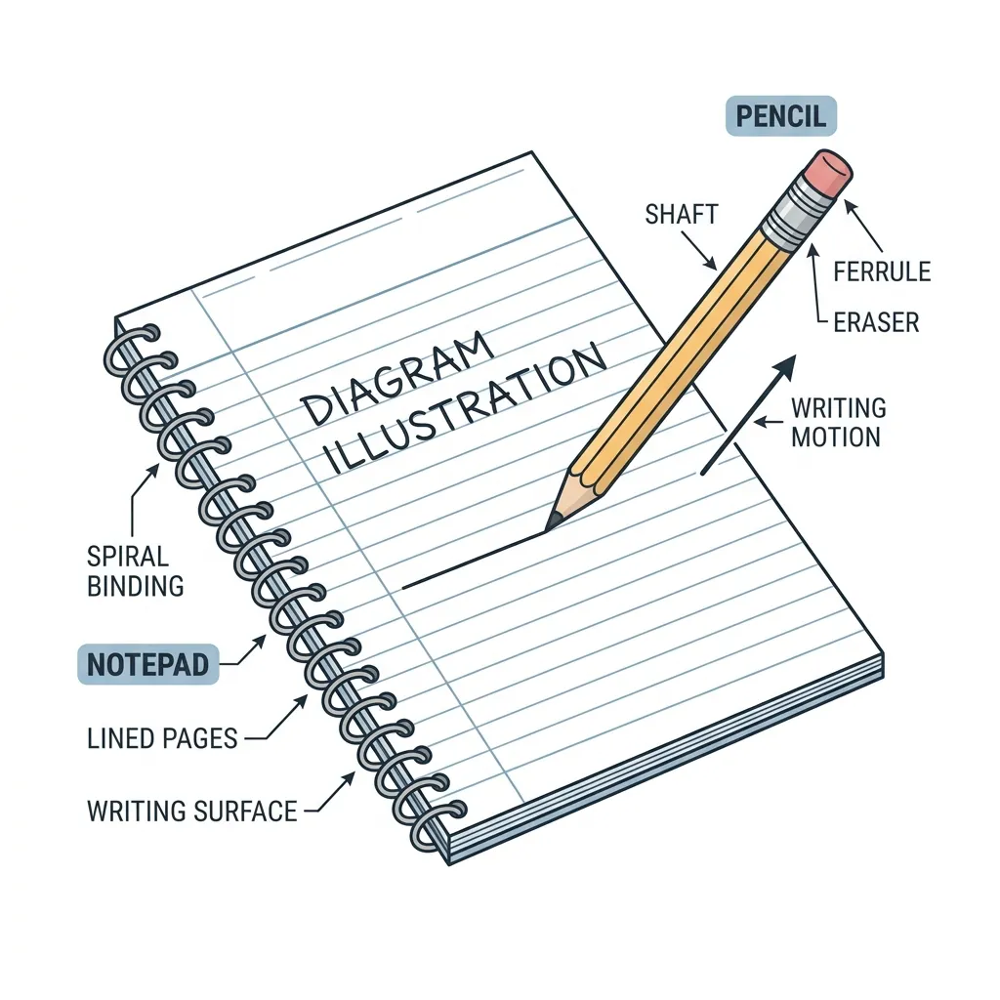
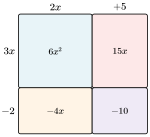
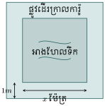
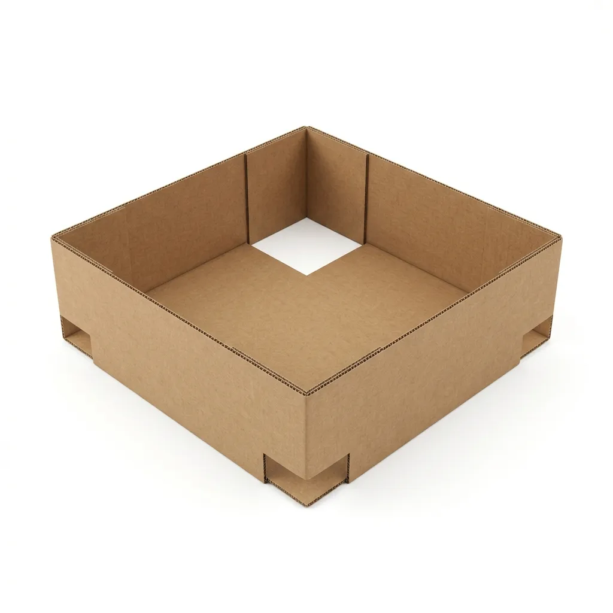
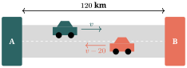
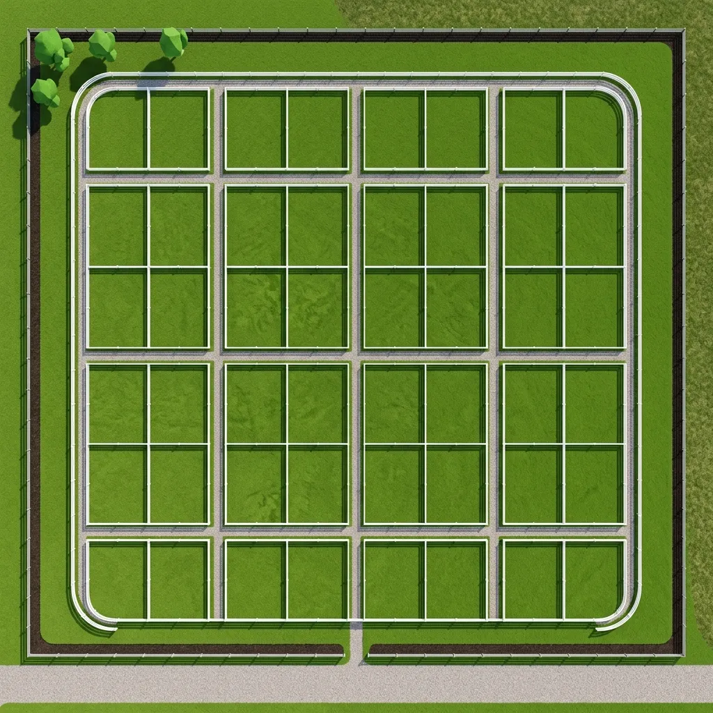

- ពន្លាតកន្សោមពីជគណិតបានត្រឹមត្រូវនិងរហ័ស។
- ដាក់កន្សោមពីជគណិតជាផលគុណនៃកត្តាបានយ៉ាងស្ទាត់ជំនាញ។
- ធ្វើប្រមាណវិធីលើកន្សោមសនិទានបានត្រឹមត្រូវដោយមានហេតុផល។

រំលឹកចំណេះដឹង សួស្ដីប្អូនៗ! នៅក្នុងថ្នាក់មុនៗ យើងបានរៀនពីរបៀបបូក ដក គុណ ចែក លេខធម្មតារួចមកហើយ។ ឥឡូវនេះយើងនឹងរំលឹកពីលក្ខណៈបំបែកនៃវិធីគុណ។
- តើ \(\displaystyle 3 \times (4 + 5)\) ស្មើប៉ុន្មាន? យើងអាចបូកសិន \(\displaystyle 3 \times 9 = 27\)។
- ប៉ុន្តែយើងក៏អាចពន្លាតវាបានដែរ \(\displaystyle 3 \times 4 + 3 \times 5 = 12 + 15 = 27\)។
ចុះបើដូរលេខទៅជាអក្សរ (អថេរ) វិញ? ដូចជា \(\displaystyle x(y + 2) = xy + 2x\)។ នេះហើយហៅថាការពន្លាតកន្សោម!

តើប្អូនៗនៅចាំចំណេះដឹងពីថ្នាក់ទី ៧ និង ៨ ទាំងនេះទេ? តោះរំលឹកទាំងអស់គ្នា!
១. លក្ខណៈបំបែកនៃវិធីគុណ
\(\displaystyle a(b \pm c) = ab \pm ac\)
ឧទាហរណ៍៖ \(\displaystyle 2x(x - 3) = 2x^2 - 6x\)
២. វិធីបូកនិងដកឯកធាដូចគ្នា
\(\displaystyle ax^n \pm bx^n = (a \pm b)x^n\)
ឧទាហរណ៍៖ \(\displaystyle 3x^2 + 5x^2 = 8x^2\) , \(\displaystyle 7xy - 2xy = 5xy\)
៣. ស្វ័យគុណ
\(\displaystyle x^m \cdot x^n = x^{m+n}\)
ឧទាហរណ៍៖ \(\displaystyle x \cdot x^2 = x^3\)
១. ផលគុណនៃកន្សោមពីជគណិត
ងាយយល់ ការគុណកន្សោមពីជគណិត គឺប្រៀបបាននឹងការស្វែងរកក្រឡាផ្ទៃនៃចតុកោណកែងធំមួយ ដែលត្រូវបែងចែកជាចតុកោណកែងតូចៗជាច្រើនអញ្ចឹងដែរ។ វិធីនេះជួយយើងបំបាត់វង់ក្រចក ដើម្បីធ្វើឱ្យកន្សោមមានទម្រង់ងាយស្រួលសម្រាប់ការបូកដកបន្ត។
ឧទាហរណ៍ទី 1 : គណនាផ្ទៃក្រឡានៃចតុកោណកែងដែលមានវិមាត្រ \(\displaystyle 2x + 5\) និង \(\displaystyle 3x - 2\) ។
គិតមុនគូ ប្អូនៗចងចាំទេថា ផ្ទៃក្រឡាចតុកោណកែងស្មើ បណ្ដោយ \(\displaystyle \times\) ទទឹង? ដើម្បីរកចម្លើយ យើងគ្រាន់តែយកកន្សោមទាំងពីរមកគុណគ្នា \(\displaystyle S = (2x + 5)(3x - 2)\)។ របៀបគុណ គឺយើងគុណព្រាយតួនីមួយៗពីវង់ក្រចកទីមួយ ទៅគ្រប់តួនៃវង់ក្រចកទីពីរ។ តោះធ្វើទាំងអស់គ្នា!
តោះចាប់ផ្តើម៖ ដំបូងយើងរៀបចំផលគុណ \(\displaystyle S = (2x + 5)(3x - 2)\)
បន្ទាប់មក យើងគុណពង្រាយចូលគ្នាតាមលក្ខណៈបំបែក៖
ចុងក្រោយ យើងបូកដកឯកធាដែលដូចគ្នាបញ្ជូលគ្នា៖
ដូចនេះ \(\displaystyle \boxed{S = 6x^2 + 11x - 10}\)

គន្លឹះពិសេសពីគ្រូ (រូបមន្តសំខាន់ៗដែលត្រូវចាំដាច់ខាត):
រូបមន្តទាំងនេះប្រៀបដូចជាអាវុធអញ្ចឹង! បើប្អូនៗចាំវាស្ទាត់ នោះការគណនានឹងលឿនដូចរន្ទះ។ តោះ! មើលរូបមន្តសំខាន់ៗខាងក្រោម៖
- ការេនៃផលបូក៖ \(\displaystyle (a + b)^2 = a^2 + 2ab + b^2\)
- ការេនៃផលសង៖ \(\displaystyle (a - b)^2 = a^2 - 2ab + b^2\)
- ផលសងការេ៖ \(\displaystyle (a - b)(a + b) = a^2 - b^2\)
- ផលសងគូប៖ \(\displaystyle (a - b)(a^2 + ab + b^2) = a^3 - b^3\)
- ផលបូកគូប៖ \(\displaystyle (a + b)(a^2 - ab + b^2) = a^3 + b^3\)
ឧទាហរណ៍ទី 2 : តោះអនុវត្តរូបមន្តពន្លាតខាងលើឱ្យបានស្ទាត់!
- ក. \(\displaystyle (2x + 3)^2 = (2x)^2 + 2(2x)(3) + 3^2 = 4x^2 + 12x + 9\)
- ខ. \(\displaystyle (5x - 1)^2 = (5x)^2 - 2(5x)(1) + 1^2 = 25x^2 - 10x + 1\)
- គ. \(\displaystyle (2x + 7)(2x - 7) = (2x)^2 - 7^2 = 4x^2 - 49\)
- ឃ. \(\displaystyle (x - 1)(x^2 + x + 1) = x^3 - 1^3 = x^3 - 1\)
- ង. \(\displaystyle (x + 1)(x^2 - x + 1) = x^3 + 1^3 = x^3 + 1\)
វិធីសាស្ត្រសរសេរឱ្យងាយចាំ និងមិនខុស (សម្រាប់ \(\displaystyle (a+b)^2\) និង \(\displaystyle (a-b)^2\)):
សិស្សគ្រូភាគច្រើនតែងតែរអិលដួលត្រង់ចំណុចនេះ ដោយសារតែភ្លេចតួកណ្តាល \(\displaystyle 2ab\)! ដើម្បីកុំឱ្យខុសទៀត គ្រូមានតិចនិកមួយ សូមប្អូនៗសរសេរតាមរបៀបនេះ (ឧទាហរណ៍ \(\displaystyle (2x+3)^2\))៖
- សរសេរការេនៃតួមុខមុនគេ៖ \(\displaystyle (2x)^2\) \(\displaystyle \dots\)
- ទុកចន្លោះកណ្តាលបន្តិច រួចសរសេរការេនៃតួក្រោយនៅចុងគេ៖ \(\displaystyle (2x)^2\) \(\displaystyle \dots\) \(\displaystyle + 3^2\)
- ចុងក្រោយ ទើបបំពេញចន្លោះកណ្តាលដោយយកលេខ \(\displaystyle 2\) គុណនឹងតួទាំងពីរ៖ \(\displaystyle (2x)^2 + 2(2x)(3) + 3^2\)
រួចទើបគណនាលទ្ធផលចុងក្រោយ៖ \(\displaystyle 4x^2 + 12x + 9\)។ ធ្វើបែបនេះធានាថាមិនបាត់តួកណ្តាល ឬច្រឡំសញ្ញាឡើយ!
ចំណុចដែលសិស្សតែងតែច្រឡំញឹកញាប់
កំហុសទី ១ ការលើកជាការេនៃផលបូក ឬផលសង
✗ \(\displaystyle (a + b)^2 = a^2 + b^2\) ✓ \(\displaystyle (a + b)^2 = a^2 + 2ab + b^2\) (កុំភ្លេចតួកណ្ដាល \(\displaystyle 2ab\) ឱ្យសោះណា!)
កំហុសទី ២ ការគុណសញ្ញាអវិជ្ជមានចូលក្នុងវង់ក្រចក
✗ \(\displaystyle -(x + 2) = -x + 2\) ✓ \(\displaystyle -(x + 2) = -x - 2\) (ត្រូវគុណសញ្ញាដកចូលគ្រប់តួក្នុងវង់ក្រចក)
ឧទាហរណ៍ទី 3 : ចូរគណនា ក. \(\displaystyle A = (k + 4)(k^2 - 4k + 1)\) ខ. \(\displaystyle B = (a - 2)(a^2 - 3a + 2)\)
គិតមុនគូ នេះជាការគុណទ្វេធា និងត្រីធា។ យើងត្រូវយកតួនីមួយៗនៃទ្វេធាទីមួយ ទៅគុណពង្រាយចូលគ្រប់តួនៃត្រីធាទីពីរ រួចបូកដកតួដូចគ្នា។
តោះ! អនុវត្តទាំងអស់គ្នា៖
ក. \(\displaystyle A = (k + 4)(k^2 - 4k + 1)\)
\(\displaystyle = k(k^2 - 4k + 1) + 4(k^2 - 4k + 1)\) (គុណបំបែកតួ)
\(\displaystyle = k^3 - 4k^2 + k + 4k^2 - 16k + 4\) (ពង្រាយសញ្ញា)
\(\displaystyle = k^3 + (-4k^2 + 4k^2) + (k - 16k) + 4\) (ផ្ដុំតួដូចគ្នា)
\(\displaystyle = k^3 - 15k + 4\)
ខ. \(\displaystyle B = (a - 2)(a^2 - 3a + 2)\)
\(\displaystyle = a(a^2 - 3a + 2) - 2(a^2 - 3a + 2)\)
\(\displaystyle = a^3 - 3a^2 + 2a - 2a^2 + 6a - 4\) (ប្រយ័ត្នសញ្ញាដក!)
\(\displaystyle = a^3 - 5a^2 + 8a - 4\)
ឧទាហរណ៍ទី 4 (ប្រយ័ត្នសញ្ញាដក!) : ចូរគណនាកន្សោម \(\displaystyle C = -2x(x - 3) - (x - 2)(x - 5)\)
គិតមុនគូ លំហាត់នេះមានសញ្ញាដកច្រើនកន្លែង ដែលសិស្សភាគច្រើនតែងតែច្រឡំ! ប្អូនៗត្រូវប្រុងប្រយ័ត្នពីរចំណុច៖ ១. ការគុណពង្រាយ \(\displaystyle -2x\) ចូលតួខាងក្នុង គឺត្រូវប្ដូរសញ្ញា (\(\displaystyle -2x \times -3 = +6x\))។ ២. ការពង្រាយសញ្ញាដក \(\displaystyle -\) នៅពីមុខរង្វង់ក្រចកទីពីរ។ យកល្អ គួរបើកវង់ក្រចកធំ \(\displaystyle [ \dots ]\) សិន ហើយគណនាផលគុណឱ្យចប់ មុននឹងទម្លាយសញ្ញាដកចូល!
តោះ! អនុវត្តទាំងអស់គ្នា៖
ដូចនេះ \(\displaystyle \boxed{C = -3x^2 + 13x - 10}\)
សាកល្បងខ្លួនឯង
ចូរគណនា៖
- ក. \(\displaystyle A = 2(x - 2)(-x^2 - x + 3) - (-2x - 1)(x - 2)^2\)
- ខ. \(\displaystyle B = (x - 1)^2(x + 2) - x(x + 1)^2\)
២. ការដាក់កន្សោមពីជគណិតជាផលគុណនៃកត្តា
ងាយយល់ ការដាក់ជាផលគុណកត្តា គឺមានន័យថា "ធ្វើបញ្ច្រាសមកវិញ" ពីការពន្លាត។ បើការពន្លាតប្រៀបដូចជាការរុះរើផ្ទះ នោះការដាក់ជាកត្តាប្រៀបដូចជាការផ្គុំផ្ទះឡើងវិញ។ ឧទាហរណ៍ បើយើងសរសេរ \(\displaystyle S = (2x + 5)(3x - 2) \longrightarrow S = 6x^2 + 11x - 10\) នេះហៅថា ពន្លាត។ តែបើចង់ឱ្យក្លាយជា ផលគុណកត្តា វិញ គឺយើងសរសេរ \(\displaystyle S = 6x^2 + 11x - 10 \longrightarrow S = (2x + 5)(3x - 2)\)។
ដើម្បីសរសេរកន្សោមពីជគណិតមួយជាផលគុណនៃកត្តា គេអាចប្រើវិធីសាស្រ្តផ្សេងៗគ្នាដូចខាងក្រោម៖
២.១. ដាក់ជាកត្តារួម
គេប្រើរូបមន្ត \(\displaystyle ka \pm kb = k(a \pm b)\) ដែល \(\displaystyle k\) ហៅថាកត្តារួម។ កត្តារួមនេះអាចជាលេខ ឬជាអក្សរដែលមាននៅគ្រប់តួ។
ឧទាហរណ៍ទី 1 : ដាក់ \(\displaystyle A = 2x^2 + 4xy\) ជាផលគុណនៃកត្តា ។
គិតមុនគូ រកមើលអ្វីដែលតួទាំងពីរមានដូចគ្នា។ - ផ្នែកមេគុណ៖ 2 និង 4 ចែកដាច់នឹង 2 ដូចគ្នា។ អញ្ចឹង 2 ជាកត្តារួម។ - ផ្នែកអក្សរ៖ \(\displaystyle x^2\) និង \(\displaystyle x\) មាន \(\displaystyle x\) ដូចគ្នា (យកស្វ័យគុណតូចជាងគេ)។ អញ្ចឹង \(\displaystyle x\) ជាកត្តារួម។
តោះ! អនុវត្តទាំងអស់គ្នា៖ តួទាំងពីរមាន \(\displaystyle 2x\) ដូចគ្នា ហេតុនេះ \(\displaystyle 2x\) ជាកត្តារួម។ \(\displaystyle A = 2x(x) + 2x(2y)\) \(\displaystyle A = 2x(x + 2y)\)
ឧទាហរណ៍ទី 2 : ដាក់ \(\displaystyle A = (x^2 - x) + (xy - y)\) ជាផលគុណនៃកត្តា ។
គិតមុនគូ នៅពេលដែលកន្សោមមានច្រើនតួ យើងអាចសាកល្បងផ្គុំតួជាក្រុមសិន។ ក្រុមទី១ \(\displaystyle (x^2 - x)\) អាចទាញ \(\displaystyle x\) ជាកត្តា។ ក្រុមទី២ \(\displaystyle (xy - y)\) អាចទាញ \(\displaystyle y\) ជាកត្តា។
តោះ! អនុវត្តទាំងអស់គ្នា៖ \(\displaystyle A = x(x - 1) + y(x - 1)\) ឥឡូវនេះ យើងឃើញថាតួថ្មីទាំងពីរមានកត្តារួមមួយទៀតគឺវង់ក្រចក \(\displaystyle (x - 1)\) ទាំងមូលតែម្តង! \(\displaystyle A = (x - 1)(x + y)\)
ឧទាហរណ៍ទី 3 (ករណីតួមុខមានសញ្ញាដក) : ដាក់ \(\displaystyle A = -4x^2 - 8x + 12\) ជាផលគុណនៃកត្តា។
គិតមុនគូ នៅពេលដែលតួមុខមានសញ្ញាដក វិធីដ៏ល្អបំផុតគឺចាប់យកសញ្ញាដក \(\displaystyle -\) ជាកត្តារួម (ឬចាប់លេខអវិជ្ជមានតែម្ដង) ដើម្បីឱ្យតួមុខនៅសល់ត្រឹមរាងវិជ្ជមាន ងាយស្រួលគណនាបន្ត។ ក្នុងទីនេះ លេខ 4, 8, និង 12 សុទ្ធតែចែកដាច់នឹង 4។ ដូច្នេះ យើងគួរចាប់ \(\displaystyle -4\) ជាកត្តារួម!
ចំណាំ៖ ពេលទាញយកសញ្ញាដកចេញ កុំភ្លេចប្ដូរសញ្ញារបស់គ្រប់តួនៅក្នុងវង់ក្រចក! (ដកទៅជាបូក បូកទៅជាដក)។
តោះ! អនុវត្តទាំងអស់គ្នា៖ \(\displaystyle A = -4x^2 - 8x + 12\)
\(\displaystyle = -4(x^2 + 2x - 3)\) (ទាញ \(\displaystyle -4\) ជាកត្តារួម រួចប្ដូរសញ្ញាខាងក្នុងវង់ក្រចក)
នៅពេលនេះ កន្សោមក្នុងវង់ក្រចកគឺ \(\displaystyle x^2 + 2x - 3\) ដែលយើងអាចដាក់ជាកត្តាបន្តទៀតដោយបំបែកតួ៖
យកលទ្ធផលនេះមកជួសចូល \(\displaystyle A\) វិញ យើងបាន៖
ដូចនេះ \(\displaystyle \boxed{A = -4(x + 3)(x - 1)}\)
សាកល្បងខ្លួនឯង
ចូរដាក់កន្សោមខាងក្រោមជាផលគុណនៃកត្តា៖
- ក. \(\displaystyle A = 6x^2(x + 1) - 2x(x + 1)\)
- ខ. \(\displaystyle B = 3(x - 1)(x + 2) + (x^2 - x)(x + 2)\)
២.២. ប្រើរូបមន្តសំខាន់ៗ
យើងអាចបំប្លែងកន្សោមឱ្យចូលទម្រង់រូបមន្ត ដើម្បីដាក់ជាកត្តាបានយ៉ាងរហ័ស។ រូបមន្តដែលនិយមប្រើគឺ៖ \(\displaystyle a^2 \pm 2ab + b^2 = (a \pm b)^2\) និង \(\displaystyle a^2 - b^2 = (a - b)(a + b)\)។
លំហាត់គំរូទី 1 : ដាក់ \(\displaystyle A = 4x^2(x + 1) - 9(x + 1)\) ជាផលគុណនៃកត្តា។
គិតមុនគូ ដំបូងយើងសង្កេតឃើញកត្តារួម \(\displaystyle (x + 1)\) ជាមុន។ បន្ទាប់ពីទាញកត្តារួមរួច យើងអាចនឹងសល់ទម្រង់ \(\displaystyle a^2 - b^2\) ទៀត។
តោះ! អនុវត្តទាំងអស់គ្នា៖ \(\displaystyle A = 4x^2(x + 1) - 9(x + 1)\) \(\displaystyle = (x + 1)(4x^2 - 9)\) (ដាក់ \(\displaystyle x + 1\) ជាកត្តារួម) ដោយ \(\displaystyle 4x^2 = (2x)^2\) និង \(\displaystyle 9 = 3^2\) នោះ \(\displaystyle 4x^2 - 9\) ចូលទម្រង់ \(\displaystyle a^2 - b^2\)។ \(\displaystyle = (x + 1)[(2x)^2 - 3^2]\) (ប្រើរូបមន្ត \(\displaystyle a^2 - b^2 = (a - b)(a + b)\)) \(\displaystyle = (x + 1)(2x - 3)(2x + 3)\)
លំហាត់គំរូទី 2 (រាងការេនៃទ្វេធា) : ចូរដាក់កន្សោមខាងក្រោមជាផលគុណនៃកត្តា។
ក. \(\displaystyle B = 9x^2 - 12x + 4\)
ខ. \(\displaystyle C = x^2 + 10x + 25\)
គិតមុនគូ នេះគឺជាកន្សោមត្រីធាដែលមានតួមុខ និងតួក្រោយជារាងការេសព្វ។ - សម្រាប់ ក. តួមុខ \(\displaystyle 9x^2 = (3x)^2\) និងតួក្រោយ \(\displaystyle 4 = 2^2\)។ តួកណ្តាលមានសញ្ញាដក ដូច្នេះវាទំនងជាចូលរូបមន្ត \(\displaystyle a^2 - 2ab + b^2 = (a - b)^2\)។ (ដកនៅកណ្តាល បូកនៅចុង!) - សម្រាប់ ខ. តួមុខ \(\displaystyle x^2\) និងតួក្រោយ \(\displaystyle 25 = 5^2\)។ សញ្ញាបូកទាំងអស់ ដូច្នេះវាចូលរូបមន្ត \(\displaystyle a^2 + 2ab + b^2 = (a + b)^2\)។
តោះ! អនុវត្តទាំងអស់គ្នា៖
ក. \(\displaystyle B = 9x^2 - 12x + 4\)
ខ. \(\displaystyle C = x^2 + 10x + 25\)
ដូចនេះ \(\displaystyle \boxed{B = (3x - 2)^2}\) និង \(\displaystyle \boxed{C = (x + 5)^2}\)
ប្រយ័ត្នការយល់ច្រឡំ! (របៀបឆែកមើលរាងការេទ្វេធា)
នៅពេលប្អូនៗឃើញកន្សោមដូចជា \(\displaystyle x^2 + 5x + 4\) សិស្សមួយចំនួនតែងតែប្រញាប់សន្និដ្ឋានថាវាជារាងការេទ្វេធា \(\displaystyle (x + 2)^2\) ព្រោះឃើញតួមុខ \(\displaystyle x^2\) និងតួក្រោយ \(\displaystyle 4 = 2^2\)។ នេះជាការយល់ខុស!
ក្បួនឆែកមើលរបស់គ្រូ៖
- មើលតួមុខ និងតួក្រោយ៖ តួមុខគឺ \(\displaystyle x^2\) (បានមកពី \(\displaystyle x\))។ តួក្រោយគឺ \(\displaystyle 4\) (បានមកពី \(\displaystyle 2^2\))។
- គណនាតួកណ្តាលដោយខ្លួនឯង៖ យកវាមកគុណនឹង 2 តាមរូបមន្ត \(\displaystyle 2ab\) គឺ \(\displaystyle 2(x)(2) = 4x\)។
ផ្ទៀងផ្ទាត់សិន៖
- បើតួកណ្តាលនៃលំហាត់គឺ \(\displaystyle 4x\) មែន (ពោលគឺ \(\displaystyle x^2 + 4x + 4\)) នោះវាពិតជាចូលរូបមន្ត \(\displaystyle (x + 2)^2\) ត្រឹមត្រូវ!
- ប៉ុន្តែលំហាត់យើងគឺ \(\displaystyle x^2 + \mathbf{5x} + 4\) ដែលតួកណ្តាលគឺ \(\displaystyle 5x\) (មិនមែន \(\displaystyle 4x\) ទេ)។ ដូច្នេះវា មិនមែន ជារាងការេសព្វឡើយ! ប្អូនៗត្រូវប្រើវិធីគុណខ្វែងវិញ ដែលបានចម្លើយ \(\displaystyle (x + 1)(x + 4)\)។
លំហាត់គំរូទី 3 (លំហាត់កម្រិតសិស្សពូកែ!) : ចូរដាក់កន្សោម \(\displaystyle D = x^2 - 4x + 4 - y^2\) ជាផលគុណនៃកត្តា។
គិតមុនគូ លំហាត់នេះមាន 4 តួ ធ្វើឱ្យសិស្សភាគច្រើនគិតដល់ការផ្ដុំតួ \(\displaystyle (2-2)\)។ ប៉ុន្តែបើប្អូនៗចាប់គូ \(\displaystyle (x^2 - y^2)\) និង \(\displaystyle (-4x + 4)\) វានឹងមិនចេញកត្តារួមទេ។ ល្បិចពិសេស៖ សង្កេតមើល 3 តួដំបូង \(\displaystyle x^2 - 4x + 4\)! នេះគឺជារាងការេនៃទ្វេធាសុទ្ធសាធ។ បើយើងផ្ដុំវាចូលគ្នា យើងនឹងអាចបំប្លែងលំហាត់នេះទៅជារូបមន្ត \(\displaystyle a^2 - b^2\) ដ៏ស្រស់ស្អាតមួយ។ តោះមើលការដោះស្រាយ!
តោះ! អនុវត្តទាំងអស់គ្នា៖
ដូចនេះ \(\displaystyle \boxed{D = (x - y - 2)(x + y - 2)}\)
សាកល្បងខ្លួនឯង
ចូរដាក់កន្សោមខាងក្រោមជាផលគុណនៃកត្តាដោយប្រើរូបមន្ត៖
- ក. \(\displaystyle x^2 - 16\)
- ខ. \(\displaystyle 4x^2 + 12x + 9\)
- គ. \(\displaystyle x^2 - 14x + 49\)
២.៣. វិធីគុណខ្វែង (AC Method)
របៀបដាក់កន្សោម \(\displaystyle Ax^2 + Bx + C\) ជាកត្តាតាមវិធីគុណខ្វែង
- បំបែកតួ \(\displaystyle A\) ជាផលគុណនៃពីរតួ (ឧ. \(\displaystyle A = a \times c\)) រួចរៀបជាជួរឈរ។
- បំបែកតួ \(\displaystyle C\) ជាផលគុណនៃពីរតួ (ឧ. \(\displaystyle C = b \times d\)) រួចរៀបជាជួរឈរ។
- គុណខ្វែងសាកល្បង រួចបូកលទ្ធផលចូលគ្នា មើលថាតើវាស្មើនឹងតួកណ្តាល \(\displaystyle B\) ដែរឬទេ?
- បើស្មើ នោះចម្លើយគឺការយកតួតាមជួរដេកនីមួយៗមកផ្គុំគ្នា៖ \(\displaystyle (ax + b)(cx + d)\)។
លំហាត់គំរូទី 1 (ករណីងាយមេគុណ \(\displaystyle A=1\)) : ចូរដាក់កន្សោម \(\displaystyle A = x^2 + 5x + 4\) ជាផលគុណនៃកត្តា ។
គិតមុនគូ ដូចដែលគ្រូបានប្រាប់ពីខាងលើ កន្សោមនេះមិនមែនជារាងការេសព្វទេ ព្រោះតួកណ្តាលមិនមែន \(\displaystyle 4x\)! ដូច្នេះយើងត្រូវប្រើវិធីគុណខ្វែង។ តួមុខ \(\displaystyle x^2\) បានមកពី \(\displaystyle x \cdot x\)។ តួក្រោយ \(\displaystyle 4\) បានមកពី \(\displaystyle 1 \cdot 4\) ឬ \(\displaystyle 2 \cdot 2\)។ ដោយសារតួកណ្តាលគឺ \(\displaystyle 5x\) យើងត្រូវយក \(\displaystyle 1 \cdot 4\) ព្រោះ \(\displaystyle 1x + 4x = 5x\) ត្រូវបេះបិទ!
ការអនុវត្ត (ផ្ទៀងផ្ទាត់ដោយតារាងគុណខ្វែង)៖
ចាប់យកតួតាមជួរដេក ជួរទីមួយគឺ \(\displaystyle (x + 1)\) ជួរទីពីរគឺ \(\displaystyle (x + 4)\)។
ដូចនេះ \(\displaystyle \boxed{A = (x + 1)(x + 4)}\)
លំហាត់គំរូទី 2 : ចូរដាក់កន្សោម \(\displaystyle B = 2x^2 - 11x + 12\) ជាផលគុណនៃកត្តា ។
គិតមុនគូ តួមុខ \(\displaystyle 2x^2\) អាចបំបែកជា \(\displaystyle 2x \cdot x\)។ តួក្រោយ \(\displaystyle 12\) អាចបំបែកជា \(\displaystyle 3 \cdot 4\) , \(\displaystyle 2 \cdot 6\) ឬ \(\displaystyle 1 \cdot 12\)។ ដោយសារតួកណ្តាលគឺ \(\displaystyle -11x\) (អវិជ្ជមាន) យើងគួរតែបំបែក \(\displaystyle 12\) ជាលេខអវិជ្ជមានគុណគ្នាសាកមើល។ តោះសាក \(\displaystyle (-3) \cdot (-4)\)!
ការអនុវត្ត (ផ្ទៀងផ្ទាត់ដោយតារាងគុណខ្វែង)៖
ដោយសារផលបូកខ្វែងស្មើនឹងតួកណ្តាលបេះបិទ នោះចម្លើយរបស់យើងគឺត្រឹមត្រូវហើយ! គ្រាន់តែចាប់តួវង់ក្រចកតាមជួរដេកជាការស្រេច។
ដូចនេះ \(\displaystyle \boxed{A = (2x - 3)(x - 4)}\)
លំហាត់គំរូទី 3 (ប្រយ័ត្នតួចុងអវិជ្ជមាន!) : ចូរដាក់កន្សោម \(\displaystyle B = 3x^2 - 5x - 2\) ជាផលគុណនៃកត្តា ។
គិតមុនគូ តួមុខ \(\displaystyle 3x^2\) អាចបំបែកជា \(\displaystyle 3x \cdot x\)។ តួក្រោយ \(\displaystyle -2\) អាចបំបែកជា \(\displaystyle (-2) \cdot 1\) ឬ \(\displaystyle 2 \cdot (-1)\)។ ដោយសារតួកណ្តាលគឺ \(\displaystyle -5x\) (អវិជ្ជមាន) យើងគួរតែដាក់សញ្ញាដកនៅលេខធំ ដើម្បីឱ្យផលបូកខ្វែងចេញមកអវិជ្ជមាន។ តោះសាក \(\displaystyle (-2) \cdot 1\) ដោយដាក់លេខ \(\displaystyle -2\) គុណខ្វែងជាមួយ \(\displaystyle 3x\) សាកមើល!
ការអនុវត្ត (ផ្ទៀងផ្ទាត់ដោយតារាងគុណខ្វែង)៖
ដោយសារផលបូកខ្វែងស្មើនឹងតួកណ្តាលបេះបិទ (\(\displaystyle -6x + x = -5x\)) នោះចម្លើយរបស់យើងគឺត្រឹមត្រូវហើយ! ចាប់តួវង់ក្រចកតាមជួរដេក។
ដូចនេះ \(\displaystyle \boxed{B = (3x + 1)(x - 2)}\)
លំហាត់គំរូទី 4 (ប្រយ័ត្ន! ត្រូវទាញកត្តារួមជាមុនសិន) : ចូរដាក់កន្សោម \(\displaystyle C = 6x^2 - 3x - 9\) ជាផលគុណនៃកត្តា ។
គិតមុនគូ ប្អូនៗឃើញលេខធំៗ កុំទាន់ប្រញាប់គុណខ្វែងភ្លាមៗ! បើយើងយកមេគុណ \(\displaystyle 6\) និង \(\displaystyle -9\) មកបំបែក វាមានជម្រើសច្រើនណាស់ ហើយលេខនឹងធំពិបាកគណនា។ ក្បួនមាស៖ មុននឹងធ្វើវិធីគុណខ្វែង ត្រូវមើលថាតើគ្រប់តួទាំងអស់មានកត្តារួមដែរឬទេ? នៅទីនេះ \(\displaystyle 6, 3\) និង \(\displaystyle 9\) សុទ្ធតែអាចចែកដាច់នឹង 3។ ដូច្នេះយើងត្រូវទាញ 3 ជាកត្តាសិន!
តោះ! អនុវត្តទាំងអស់គ្នា៖ \(\displaystyle C = 6x^2 - 3x - 9\)
\(\displaystyle C = 3(2x^2 - x - 3)\) (ទាញ \(\displaystyle 3\) ជាកត្តា)
ឥឡូវនេះ យើងធ្វើវិធីគុណខ្វែងសម្រាប់តែកន្សោមក្នុងវង់ក្រចក \(\displaystyle 2x^2 - x - 3\) ប៉ុណ្ណោះ៖
ផលបូកខ្វែងគឺ \(\displaystyle -3x + 2x = -x\) ពិតជាស្មើនឹងតួកណ្តាលមែន។ ដូច្នេះកត្តាគឺ \(\displaystyle (x + 1)\) និង \(\displaystyle (2x - 3)\)។
យកកត្តានេះទៅជួសចូលកន្សោមដើមដែលមានលេខ 3 នៅពីមុខស្រាប់៖ ដូចនេះ \(\displaystyle \boxed{C = 3(x + 1)(2x - 3)}\)
លំហាត់គំរូទី 5 (រាងត្រីធា ដឺក្រេទី៤) : ចូរដាក់កន្សោម \(\displaystyle D = x^4 - 5x^2 + 4\) ជាផលគុណនៃកត្តា។
គិតមុនគូ ប្អូនៗឃើញស្វ័យគុណ 4 កុំទាន់ភ័យ! ដោយសារវាមានតួ \(\displaystyle x^4\) និង \(\displaystyle x^2\) យើងអាចចាត់ទុក \(\displaystyle x^2\) ជាអញ្ញាតមួយផ្សេងសិន (ដូចជាតាង \(\displaystyle t = x^2\) ជាដើម) រួចប្រើវិធីគុណខ្វែងដោះស្រាយដូចសមីការដឺក្រេទី២ធម្មតា។ ពេលបានចម្លើយជា \(\displaystyle x^2\) ហើយ កុំភ្លេចពិនិត្យមើលថាតើវាអាចចូលរូបមន្ត \(\displaystyle a^2 - b^2\) បន្តទៀតឬទេ!
តោះ! អនុវត្តទាំងអស់គ្នា៖ បើយើងតាង \(\displaystyle t = x^2\) កន្សោមនេះនឹងទៅជា \(\displaystyle t^2 - 5t + 4\)។ យើងអាចប្រើការគុណខ្វែង៖
\(\displaystyle t^2\) បានមកពី \(\displaystyle t \times t\)
\(\displaystyle 4\) បានមកពី \(\displaystyle (-1) \times (-4)\) (ផលបូកខ្វែង \(\displaystyle -4t - t = -5t\))
អញ្ចឹង \(\displaystyle t^2 - 5t + 4 = (t - 1)(t - 4)\)។
ពេលនេះ យើងយក \(\displaystyle x^2\) មកជំនួស \(\displaystyle t\) វិញ៖
ដូចនេះ \(\displaystyle \boxed{C = (x - 1)(x + 1)(x - 2)(x + 2)}\)
សាកល្បងខ្លួនឯង
ចូរដាក់កន្សោមខាងក្រោមជាផលគុណនៃកត្តាដោយប្រើវិធីគុណខ្វែង៖
- ក. \(\displaystyle x^2 + 7x + 12\)
- ខ. \(\displaystyle 2x^2 - 5x - 3\)
២.៤. វិធីបំពេញនិងបន្ថយតួ (Completing the Square)
របៀបបំពេញនិងបន្ថយតួសម្រាប់ \(\displaystyle x^2 + Bx + C\)
- យកមេគុណនៃតួ \(\displaystyle x\) (គឺ \(\displaystyle B\)) មកចែកនឹង ២ រួចលើកជាការេ៖ \(\displaystyle \left(\frac{B}{2}\right)^2\)។ នេះគឺជា "លេខទិព្វ" របស់យើង!
- បូក "លេខទិព្វ" នេះ រួចដកវាចេញវិញភ្លាម (ដើម្បីកុំឱ្យប្រែប្រួលតម្លៃកន្សោមដើម)។
- ផ្តុំ ៣ តួដំបូងឱ្យចូលរូបមន្តការេនៃទ្វេធា \(\displaystyle (x + \frac{B}{2})^2\)។
- បូកដកលេខដែលនៅសល់ខាងក្រៅ ហើយប្រើរូបមន្តផលសងការេ \(\displaystyle a^2 - b^2\) បើអាច។
ឧទាហរណ៍ទី១ : ដាក់ \(\displaystyle A = x^2 - 2x - 8\) ជាផលគុណនៃកត្តា។
គិតមុនគូ តួកណ្តាលគឺ \(\displaystyle -2x\)។ យក \(\displaystyle -2\) ចែកនឹង ២ ស្មើ \(\displaystyle -1\)។ លើកជាការេបាន \(\displaystyle (-1)^2 = 1\)។ ដូច្នេះ "លេខទិព្វ" ដែលត្រូវបំពេញគឺ 1។ យើងនឹងបូក 1 ហើយដក 1 វិញ។
តោះ! អនុវត្តទាំងអស់គ្នា៖
ដូចនេះ \(\displaystyle \boxed{A = (x - 4)(x + 2)}\)
ឧទាហរណ៍ទី២ : ដាក់ \(\displaystyle B = x^2 + 6x - 7\) ជាផលគុណនៃកត្តា។
គិតមុនគូ តួកណ្តាលគឺ \(\displaystyle 6x\)។ យក \(\displaystyle 6\) ចែកនឹង ២ ស្មើ \(\displaystyle 3\)។ លើកជាការេបាន \(\displaystyle 3^2 = 9\)។ ដូច្នេះ "លេខទិព្វ" ដែលត្រូវបំពេញគឺ 9។
តោះ! អនុវត្តទាំងអស់គ្នា៖
ដូចនេះ \(\displaystyle \boxed{B = (x - 1)(x + 7)}\)
ឧទាហរណ៍ទី៣ (ករណីមានប្រភាគ) : ដាក់ \(\displaystyle C = x^2 - 5x + 6\) ជាផលគុណនៃកត្តា។
គិតមុនគូ តួកណ្តាលគឺ \(\displaystyle -5x\)។ យក \(\displaystyle -5\) ចែកនឹង ២ បាន \(\displaystyle -\frac{5}{2}\)។ លើកជាការេបាន \(\displaystyle \left(-\frac{5}{2}\right)^2 = \frac{25}{4}\)។ "លេខទិព្វ" គឺ \(\displaystyle \frac{25}{4}\)។ ករណីនេះមានប្រភាគ ត្រូវប្រុងប្រយ័ត្នពេលបូកដក!
តោះ! អនុវត្តទាំងអស់គ្នា៖
ដូចនេះ \(\displaystyle \boxed{C = (x - 3)(x - 2)}\)
ឧទាហរណ៍ទី៤ (ករណីមេគុណ \(\displaystyle a \neq 1\)) : ដាក់ \(\displaystyle D = 2x^2 + 8x - 10\) ជាផលគុណនៃកត្តា។
គិតមុនគូ នៅទីនេះ មេគុណនៃ \(\displaystyle x^2\) មិនមែនជាលេខ 1 ទេ (គឺលេខ 2)។ ដូច្នេះ ជាដំបូងយើងត្រូវទាញលេខ 2 ជាកត្តាសិន ទើបអាចអនុវត្តវិធីបំពេញនិងបន្ថយតួលើកន្សោមក្នុងរង្វង់ក្រចកបាន។
តោះ! អនុវត្តទាំងអស់គ្នា៖ ទាញ 2 ជាកត្តា៖ \(\displaystyle D = 2(x^2 + 4x - 5)\)
តួកណ្តាលថ្មីគឺ \(\displaystyle 4x\)។ យក \(\displaystyle 4\) ចែកនឹង ២ បាន \(\displaystyle 2\)។ លើកជាការេបាន \(\displaystyle 2^2 = 4\)។ "លេខទិព្វ" គឺ \(\displaystyle 4\)។
ដូចនេះ \(\displaystyle \boxed{D = 2(x - 1)(x + 5)}\)
ឧទាហរណ៍ទី៥ (ពេលតួកណ្តាលថ្មីជាសេស) : ដាក់ \(\displaystyle E = 2x^2 - 6x + 4\) ជាផលគុណនៃកត្តាដោយវិធីបំពេញនិងបន្ថយតួ។
គិតមុនគូ ទាញ \(\displaystyle 2\) ជាកត្តា យើងបាន \(\displaystyle E = 2(x^2 - 3x + 2)\)។ តួកណ្តាលថ្មីគឺ \(\displaystyle -3x\) ដែលជាចំនួនសេស។ អញ្ចឹងពេលយកវាមកចែកនឹង ២ យើងនឹងបានប្រភាគ \(\displaystyle \frac{3}{2}\)។ កុំភ័យអី គ្រាន់តែធ្វើតាមជំហានធម្មតា! "លេខទិព្វ" គឺ \(\displaystyle \left(\frac{3}{2}\right)^2 = \frac{9}{4}\)។
តោះ! អនុវត្តទាំងអស់គ្នា៖
ដូចនេះ \(\displaystyle \boxed{E = 2(x - 2)(x - 1)}\)
ឧទាហរណ៍ទី៦ (លំហាត់កម្រិតសិស្សពូកែ ចេញប្រភាគតាំងពីដើម!) : ដាក់ \(\displaystyle F = 3x^2 + 5x + 2\) ជាផលគុណនៃកត្តាដោយវិធីបំពេញនិងបន្ថយតួ។
គិតមុនគូ មេគុណ \(\displaystyle a=3\) ប៉ុន្តែតួផ្សេងទៀតមិនអាចចែកដាច់នឹង 3 ទេ។ ដូច្នេះពេលទាញ 3 ជាកត្តា វាប្រាកដជាមានភាគបែង 3 នៅក្នុងវង់ក្រចក! \(\displaystyle F = 3\left(x^2 + \frac{5}{3}x + \frac{2}{3}\right)\)។ តួកណ្តាលថ្មីគឺ \(\displaystyle \frac{5}{3}x\)។ យក \(\displaystyle \frac{5}{3}\) ចែកនឹង ២ បាន \(\displaystyle \frac{5}{6}\)។ លើកជាការេបាន \(\displaystyle \left(\frac{5}{6}\right)^2 = \frac{25}{36}\)។ នេះហើយជា "លេខទិព្វ"!
តោះ! អនុវត្តទាំងអស់គ្នា៖
ដូចនេះ \(\displaystyle \boxed{F = (3x + 2)(x + 1)}\)
សាកល្បងខ្លួនឯង
ចូរដាក់កន្សោមជាផលគុណនៃកត្តាដោយប្រើវិធីបំពេញនិងបន្ថយតួ៖
- ក. \(\displaystyle x^2 + 8x + 15\)
- ខ. \(\displaystyle x^2 - 7x + 10\)
- គ. \(\displaystyle 3x^2 + 6x - 9\)
៣. ប្រមាណវិធីលើកន្សោមសនិទាន
ងាយយល់ កន្សោមសនិទាន គឺគ្រាន់តែជា "ប្រភាគ" ដែលមានអក្សរ (អថេរ) នៅភាគយក ឬភាគបែងប៉ុណ្ណោះ! របៀបបូក ដក គុណ ចែក វា គឺដូចគ្នាបេះបិទនឹងរបៀបធ្វើប្រភាគលេខធម្មតាដែរ៖ - ចង់បូកដកប្រភាគ ត្រូវ "តម្រូវភាគបែង" ឱ្យដូចគ្នាសិន។ - ចង់គុណប្រភាគ គឺយក លើគុណលើ ក្រោមគុណក្រោម។ - ចង់ចែកប្រភាគ គឺគុណនឹងចម្រាស់នៃប្រភាគទី២។
៣.១. វិធីបូក ដក
ជាទូទៅ ៖ ដើម្បីបូកឬដកកន្សោមសនិទាន
- ដាក់ភាគយកនិងភាគបែងនៃប្រភាគនីមួយៗជាផលគុណនៃកត្តាសិន។
- សម្រួលប្រភាគនីមួយៗ (បើអាច)។
- តម្រូវភាគបែងរួម (រកភាគបែងរួមតូចបំផុត)។
- បូកឬដកតែភាគយកប៉ុណ្ណោះ ដោយរក្សាទុកភាគបែងរួម។
- សម្រួលលទ្ធផលចុងក្រោយបើអាច។
សម្គាល់៖ យើងចាត់ទុកកត្តាដែលត្រូវសម្រួលជាកត្តាមិនសូន្យ ហេតុនេះយើងមិនតម្រូវឱ្យមានការបញ្ជាក់តម្លៃអថេរនាំឱ្យកត្តានោះស្មើនឹងសូន្យឡើយ។
គន្លឹះពិសេសពីគ្រូ៖ ការសម្រួលប្រភាគ
សូមប្អូនៗចាំថា យើងអាចសម្រួលប្រភាគបាន លុះត្រាតែ តួទាំងនោះស្ថិតក្នុងទម្រង់ជា ផលគុណ ប៉ុណ្ណោះ! ឧទាហរណ៍៖ ✓ \(\displaystyle \frac{x(x+2)}{y(x+2)} = \frac{x}{y}\) (ត្រឹមត្រូវ ព្រោះវាគុណគ្នា) ✗ \(\displaystyle \frac{x^2 + 2}{x + 2} = x\) (ខុសទាំងស្រុង! កុំឆូតសម្រួលលេខ 2 ឬ x ចោលណា៎ ព្រោះវាជាប់សញ្ញាបូក)
លំហាត់គំរូទី 1 : ចូរគណនា \(\displaystyle A = \frac{x^2 + 7x}{x^2 - 49} - \frac{10}{2x + 4}\) ។
គិតមុនគូ កុំអាលតម្រូវភាគបែងភ្លាមៗ! មើលសិនថាតើប្រភាគនីមួយៗអាចសម្រួលបានឬទេ? យើងត្រូវដាក់ភាគយក និងភាគបែងជាផលគុណកត្តាសិន។
តោះ! អនុវត្តទាំងអស់គ្នា៖ \(\displaystyle A = \frac{x(x + 7)}{(x - 7)(x + 7)} - \frac{10}{2(x + 2)}\) (ដាក់ជាផលគុណកត្តា)
ឥឡូវយើងឃើញថាប្រភាគទីមួយមាន \(\displaystyle (x+7)\) រួម រីឯប្រភាគទីពីរអាចសម្រួលលេខ 10 នឹង 2 បាន។ \(\displaystyle A = \frac{x}{x - 7} - \frac{5}{x + 2}\) (ដោយឧបមាថា \(\displaystyle x \neq -7\) និង \(\displaystyle x \neq -2\))
ពេលនេះភាគបែងគឺ \(\displaystyle (x-7)\) និង \(\displaystyle (x+2)\)។ ដូច្នេះភាគបែងរួមគឺ \(\displaystyle (x-7)(x+2)\)។ \(\displaystyle = \frac{x(x + 2)}{(x - 7)(x + 2)} - \frac{5(x - 7)}{(x - 7)(x + 2)}\) (តម្រូវភាគបែង)
\(\displaystyle = \frac{x(x + 2) - 5(x - 7)}{(x - 7)(x + 2)}\) (បូកដកភាគយក)
\(\displaystyle = \frac{x^2 + 2x - 5x + 35}{(x - 7)(x + 2)}\) (ពង្រាយភាគយក)
\(\displaystyle = \frac{x^2 - 3x + 35}{(x - 7)(x + 2)}\) (បូកដកតួដូចគ្នា)
លំហាត់គំរូទី 2 (ភាគបែងខុសគ្នាទាំងស្រុង) : ចូរគណនា \(\displaystyle B = \frac{1}{x^2 - 1} - \frac{1}{x^2 + x}\) ។
គិតមុនគូ ប្រភាគទាំងពីរមានភាគបែង \(\displaystyle x^2 - 1\) និង \(\displaystyle x^2 + x\) ដែលមើលទៅខុសគ្នាស្រឡះ។ យើងមិនអាចគ្រាន់តែយកវាគុណខ្វែងគ្នាបានទេ (ព្រោះវានឹងចេញកន្សោមវែងណាស់)។ វិធីល្អគឺត្រូវដាក់ភាគបែងទាំងពីរជាផលគុណកត្តាសិន រួចទើបរកភាគបែងរួមតូចបំផុត (LCM)។
តោះ! អនុវត្តទាំងអស់គ្នា៖
ភាគបែងរួមគឺ \(\displaystyle x(x - 1)(x + 1)\)។ យើងត្រូវគុណបំពេញភាគយកនៃប្រភាគនីមួយៗឱ្យត្រូវនឹងភាគបែងរួម៖
ដូចនេះ \(\displaystyle \boxed{B = \frac{1}{x(x - 1)(x + 1)}}\)
សាកល្បងខ្លួនឯង
ចូរគណនា៖
- ក. \(\displaystyle 1 - \frac{1}{x} + \frac{2}{x - 1}\)
- ខ. \(\displaystyle \frac{x^2 - x}{x^2 + x} + \frac{3x + 2}{x + 1} - \frac{2x^2 - x}{x(x + 1)}\)
៣.២. វិធីគុណនិងវិធីចែក
ជាទូទៅ ៖ ដើម្បីគុណឬចែកកន្សោមសនិទាន
- វិធីគុណ៖ ដាក់ភាគយកនិងភាគបែងជាផលគុណកត្តា រួចគុណភាគយកនឹងភាគយក ភាគបែងនឹងភាគបែង។
- វិធីចែក៖ គុណប្រភាគតំណាងចែក នឹងចម្រាស់នៃប្រភាគតួចែក។
- ឆូតសម្រួលកត្តាដូចគ្នាចោល (បើអាច) ដើម្បីបានលទ្ធផលចុងក្រោយ។
ឧទាហរណ៍ទី 1 (វិធីគុណ) : គណនា \(\displaystyle \frac{a}{a + 2} \times \frac{3a + 6}{a^2 - 4a}\)
គិតមុនគូ សម្រាប់វិធីគុណ យើងមិនចាំបាច់តម្រូវភាគបែងទេ។ គ្រាន់តែដាក់គ្រប់យ៉ាងជាផលគុណកត្តា រួចឆូតសម្រួលគ្នាពីលើចុះក្រោម ហើយចុងក្រោយយក សល់លើគុណសល់លើ, សល់ក្រោមគុណសល់ក្រោម។
តោះ! អនុវត្តទាំងអស់គ្នា៖ \(\displaystyle \frac{a}{a + 2} \times \frac{3a + 6}{a^2 - 4a} = \frac{a}{a + 2} \times \frac{3(a + 2)}{a(a - 4)}\) \(\displaystyle = \frac{a \times 3(a + 2)}{(a + 2) \times a(a - 4)}\) \(\displaystyle = \frac{3a(a + 2)}{a(a + 2)(a - 4)}\) សម្រួលកត្តា \(\displaystyle a\) និង \(\displaystyle (a + 2)\) ទាំងលើទាំងក្រោម នោះយើងនៅសល់តែ៖ \(\displaystyle = \frac{3}{a - 4}\)
ឧទាហរណ៍ទី 2 (វិធីចែក) : គណនា \(\displaystyle \frac{4t + 6}{t} \div \frac{4t^2 - 9}{t^2}\)
គិតមុនគូ ចែកនឹងប្រភាគ គឺគុណនឹងចម្រាស់របស់វា។ បន្ទាប់ពីត្រឡប់ប្រភាគក្រោយហើយ អនុវត្តវិធីគុណដូចធម្មតា។
តោះ! អនុវត្តទាំងអស់គ្នា៖ \(\displaystyle \frac{4t + 6}{t} \div \frac{4t^2 - 9}{t^2} = \frac{2(2t + 3)}{t} \div \frac{(2t - 3)(2t + 3)}{t^2}\) (ដាក់ជាផលគុណកត្តាសិន)
\(\displaystyle = \frac{2(2t + 3)}{t} \times \frac{t^2}{(2t - 3)(2t + 3)}\) (ប្ដូរចែកទៅគុណ ហើយត្រឡប់ប្រភាគ)
\(\displaystyle = \frac{2t^2(2t + 3)}{t(2t - 3)(2t + 3)}\) (គុណចូលគ្នា)
\(\displaystyle = \frac{2t}{2t - 3}\) (សម្រួល \(\displaystyle t\) និង \(\displaystyle (2t+3)\) ចោល)
ឧទាហរណ៍ទី 3 (ប្រភាគជាន់គ្នា) : គណនា \(\displaystyle C = \frac{1 - \frac{1}{x}}{1 + \frac{1}{x}}\)
គិតមុនគូ នៅពេលឃើញប្រភាគជាន់គ្នា កុំភ័យ! វិធីងាយបំផុតគឺគិតថាវាជាការចែករវាងភាគយកធំ និងភាគបែងធំ (\(\displaystyle C = \text{ភាគយកធំ} \div \text{ភាគបែងធំ}\))។ ជំហានដំបូង យើងត្រូវតម្រូវភាគបែងផ្នែកខាងលើឱ្យចប់សព្វគ្រប់សិន ហើយក៏តម្រូវភាគបែងផ្នែកខាងក្រោមឱ្យចប់សព្វគ្រប់ដែរ ទើបធ្វើប្រមាណវិធីចែកជាក្រោយ។
តោះ! អនុវត្តទាំងអស់គ្នា៖ ផ្នែកភាគយកធំ៖ \(\displaystyle 1 - \frac{1}{x} = \frac{x}{x} - \frac{1}{x} = \frac{x - 1}{x}\)
ផ្នែកភាគបែងធំ៖ \(\displaystyle 1 + \frac{1}{x} = \frac{x}{x} + \frac{1}{x} = \frac{x + 1}{x}\)
យកមកជួសចូលប្រភាគដើមវិញ យើងបាន៖ \(\displaystyle C = \frac{\frac{x - 1}{x}}{\frac{x + 1}{x}}\)
ពេលនេះវាចូលរាងការចែកប្រភាគ (\(\displaystyle A \div B\)) ដែលយើងត្រូវប្តូរចែកទៅគុណ រួចត្រឡប់ប្រភាគក្រោយ៖
សម្រួលកត្តា \(\displaystyle x\) ទាំងលើទាំងក្រោមចោល យើងនៅសល់៖
ដូចនេះ \(\displaystyle \boxed{C = \frac{x - 1}{x + 1}}\)
សាកល្បងខ្លួនឯង
ចូរគណនាកន្សោមសនិទានខាងក្រោម៖
- ក. \(\displaystyle \frac{3x}{x+2} \times \frac{x^2 - 4}{6x}\)
- ខ. \(\displaystyle \frac{x+3}{x-1} \div \frac{x^2 - 9}{x^2 - 1}\)
? លំហាត់
ចូរពន្លាតកន្សោមខាងក្រោម ។
★គន្លឹះ គន្លឹះពីគ្រូ៖ ចាំទេប្អូនៗ? ពេលពន្លាត យើងត្រូវគុណព្រាយតួនីមួយៗចូលគ្នា។ កុំភ្លេចណា៎ ប្រុងប្រយ័ត្នសញ្ញាដកបំផុត ព្រោះសញ្ញាដកគុណនឹងសញ្ញាដកចេញសញ្ញាបូក!
- ក. \(\displaystyle A = (x + 4)(x^2 - 4x + 1)\)
- ខ. \(\displaystyle B = (x + 3)(x^2 + 4x - 3)\)
- គ. \(\displaystyle C = (a - b)(a^2 - 2ab - 3b^2)\)
- ឃ. \(\displaystyle D = (x + 2)(x^2 - 5x - 1)\)
- ង. \(\displaystyle E = (y + 5)(y^2 - 3y - 8)\)
- ច. \(\displaystyle F = (3n + 4)(n + 5)\)
- ឆ. \(\displaystyle G = (x + 3)(x - 1)^2\)
- ជ. \(\displaystyle H = (y - 1)(y + 2)^2\) ។
ចូររក \(\displaystyle a\) ដើម្បីឱ្យ
ក. \(\displaystyle (x + a)(x - 8) = x^2 - 12x + 32\)
ខ. \(\displaystyle (2y - 6)(y + a) = 2y^2 + 8y - 42\) ។
★គន្លឹះ គន្លឹះពីគ្រូ៖ លំហាត់នេះអត់ពិបាកទេ! ប្អូនៗគ្រាន់តែពន្លាតខាងឆ្វេងឱ្យអស់សិន។ បន្ទាប់មក យកមេគុណមុខអក្សរដូចគ្នា មកផ្ទឹមគ្នា (ឧទាហរណ៍ មេគុណ \(\displaystyle x\) ស្មើនឹងមេគុណ \(\displaystyle x\)) នោះប្អូនៗនឹងទាញរក \(\displaystyle a\) ឃើញមិនខាន!
ចូរដាក់កន្សោមខាងក្រោមជាផលគុណនៃកត្តា ។
★គន្លឹះ គន្លឹះពីគ្រូ៖ នេះគឺជាលំហាត់មូលដ្ឋាននៃការចាប់កត្តារួម។ ប្អូនៗសម្លឹងមើលតួនីមួយៗ តើមានលេខណា ឬអញ្ញាតណាដែលដូចគ្នា? ទាញវាចេញមកក្រៅវង់ក្រចកមក!
- ក. \(\displaystyle 2x^4 + 8x\)
- ខ. \(\displaystyle 7b^3 + 21b\)
- គ. \(\displaystyle 8ax^2 - 12a^2x^3\)
- ឃ. \(\displaystyle 10x^3y^2 - 15xy^3\)
- ង. \(\displaystyle 6x^2 - 9y^2\)
- ច. \(\displaystyle 15x - 20y^2\)
- ឆ. \(\displaystyle 4x^3 - 2x^2 + 14x\)
- ជ. \(\displaystyle 3a^4 + 9a^2 - 15\)
- ឈ. \(\displaystyle 2x^3 + 3x^2 + 4x\)
- ញ. \(\displaystyle 9xy - 3x^2 + 4xy^2\)
- ដ. \(\displaystyle 8abc^2 - 4b^2c + 12a^2bc\)
- ឋ. \(\displaystyle 6x^2yz + 2xy^2z - 4xyz\)
- ឌ. \(\displaystyle 12x^4y^3t^2 - 4x^3yt^2 + 8x^2t - 16xy\) ។
ចូរដាក់កន្សោមខាងក្រោមជាផលគុណនៃកត្តា ។
★គន្លឹះ គន្លឹះពីគ្រូ៖ ពេលខ្លះយើងមើលទៅអត់ឃើញកត្តារួមដូចគ្នាភ្លាមៗទេ។ ល្បិចនៅទីនេះគឺ ប្អូនត្រូវចាប់តួណាដែលមានរាងស្រដៀងគ្នាជាគូៗសិន។ អូ! មួយទៀត បើទាញសញ្ញាដកចេញ កុំភ្លេចប្ដូរសញ្ញានៅខាងក្នុងវង់ក្រចកណា៎! ឧទាហរណ៍៖ \(\displaystyle -7y - 14 = -7(y + 2)\) ។
- ក. \(\displaystyle a(x + 1) + b(x + 1)\)
- ខ. \(\displaystyle z(y - 3) + 2(y - 3)\)
- គ. \(\displaystyle ab - 3a + 9b - 27\)
- ឃ. \(\displaystyle ab + 7a + 4b + 28\)
- ង. \(\displaystyle xy + 2x - 7y - 14\)
- ច. \(\displaystyle ap - 2pk + ya - 2yk\)
- ឆ. \(\displaystyle am - mb - an + nb\)
- ជ. \(\displaystyle 12xy + 15x + 4y + 5\)
- ឈ. \(\displaystyle 2ab - 8a + 3b - 12\)
- ញ. \(\displaystyle 3ab + 12a - b - 4\)
- ដ. \(\displaystyle xy - 8x - 3y + 24\) ។
ចូរដាក់កន្សោមខាងក្រោមជាផលគុណនៃកត្តា ។
★គន្លឹះ គន្លឹះពីគ្រូ៖ លំហាត់នេះវែងមែនទេ? កុំភ័យ! ប្អូនៗសាកផ្ដុំវាជាក្រុមៗ (ឧទាហរណ៍ ២តួមួយក្រុម ឬ ៣តួមួយក្រុម) រួចទាញកត្តារួមចេញម្ដងមួយក្រុមៗ មើល៍! តើឃើញមានកត្តារួមថ្មីលេចចេញមកទេ?
- \(\displaystyle A = at + bt + ct + 2a + 2b + 2c\)
- \(\displaystyle B = ax + 2ay + 3az - 4x - 8y - 12z\)
- \(\displaystyle C = ax + ay - az - bx - by + bz\)
- \(\displaystyle D = y^2 - cy - ay + ac - by + bc\) ។
ចូរដាក់កន្សោមខាងក្រោមជាផលគុណនៃកត្តា ។
★គន្លឹះ គន្លឹះពីគ្រូ៖ ក្រឡេកមើលមួយភ្លែត ឃើញរាងការេដកការេទេ? ច្បាស់ណាស់ ប្រើរូបមន្ត \(\displaystyle A^2 - B^2 = (A-B)(A+B)\) មក អនុវត្តយកតែម្ដង! ចំណាំ៖ \(\displaystyle A\) ឬ \(\displaystyle B\) អាចជាវង់ក្រចកទាំងមូល។
- ក. \(\displaystyle A = (x + y)^2 - z^2\)
- ខ. \(\displaystyle B = (x + y)^2 - (z + t)^2\)
- គ. \(\displaystyle C = (x^2 - 2xy + y^2) - t^2\)
- ឃ. \(\displaystyle D = (a + b)^2 - (a - b)^2\) ។
ចូររកតម្លៃនៃ \(\displaystyle a\) ដើម្បីផ្ទៀងផ្ទាត់សមភាពខាងក្រោម ។
ក. \(\displaystyle 4x^2 - 3ay^4 = (2x + 9y^2)(2x - 9y^2)\)
ខ. \(\displaystyle 16x^2 + 5ay^4 = (4x + 5y^2)(4x - 5y^2)\) ។
★គន្លឹះ គន្លឹះពីគ្រូ៖ ប្អូនៗគ្រាន់តែអនុវត្តរូបមន្តផលសងការេ \(\displaystyle (A-B)(A+B) = A^2 - B^2\) នៅអង្គខាងស្តាំឱ្យហើយសិន។ បន្ទាប់មក ផ្ទឹមមេគុណមុខអក្សរដូចគ្នាទាំងសងខាង ដើម្បីទាញរក \(\displaystyle a\)។
ចូរដាក់កន្សោមខាងក្រោមជាផលគុណនៃកត្តា ។
★គន្លឹះ គន្លឹះពីគ្រូ៖ លំហាត់ទាំងអស់នេះសុទ្ធតែមានរាងផលសងការេ។ បើមានតួណាដែលនៅរាយប៉ាយ ប្អូនៗអាចទាញកត្តារួមចេញសិន ដើម្បីឱ្យចេញរាងការេសុទ្ធ។ ឧទាហរណ៍ \(\displaystyle 3a^2 - 12 = 3(a^2 - 4)\)។
- ក. \(\displaystyle x^2 - 16\)
- ខ. \(\displaystyle y^2 - 121\)
- គ. \(\displaystyle y^2 - 1\)
- ឃ. \(\displaystyle 4z^2 - 49\)
- ង. \(\displaystyle 3a^2 - 12\)
- ច. \(\displaystyle 25b^2 - 64\)
- ឆ. \(\displaystyle 36x^4 - y^2\)
- ជ. \(\displaystyle 84x^2 - 21\)
- ឈ. \(\displaystyle 3x^2 - 75\)
- ញ. \(\displaystyle 4m^2 - 144\)
- ដ. \(\displaystyle 8x^2 - 160x + 800\)
- ឋ. \(\displaystyle 5x^2y^2 - 500\)
- ឌ. \(\displaystyle 3t^2z^4 - 147\)
- ឍ. \(\displaystyle 2xy^2 - 32x\)
- ណ. \(\displaystyle 3a^2b^4 - 192a^5\)
- ត. \(\displaystyle 5ab^2 - 20a + 30b^2 - 120\)
- ថ. \(\displaystyle 4cx^2 - 4c - 12x^2 + 12\)
- ទ. \(\displaystyle 2xy^2 - 2x + 4y^2 - 4\) ។
ចូរដាក់កន្សោមខាងក្រោមជាផលគុណនៃកត្តា ។
★គន្លឹះ គន្លឹះពីគ្រូ៖ សម្រាប់លំហាត់ទាំងនេះ ប្អូនៗត្រូវពន្លាត និងផ្ដុំតួសារជាថ្មី ឬប្រើរូបមន្តការេនៃទ្វេធា និងផលសងការេបញ្ចូលគ្នា។ ត្រូវមានភាពបត់បែនណា៎ សាកល្បងមើលសិនទៅ កុំទាន់ចុះចាញ់!
- ក. \(\displaystyle 9(x - 1)^2 - 4(2x + 3)^2\)
- ខ. \(\displaystyle 4(y + 2)^2 - y^2\)
- គ. \(\displaystyle 3(x + 1) - x^2 - 2x - 1\)
- ឃ. \(\displaystyle (2x - 5)^2 - 4x^2 + 25\)
- ង. \(\displaystyle 16(x + 3)^2 - (x - 1)^2\)
- ច. \(\displaystyle x^3 - x\)
- ឆ. \(\displaystyle t^4 - 1\)
- ជ. \(\displaystyle 4x^2 - 16x\)
- ឈ. \(\displaystyle (x + 1)^2 - (x^2 - 1) + 2x + 2\)
- ញ. \(\displaystyle x^5 - x\)
- ដ. \(\displaystyle x(y - 1)^2 - 4x\) ។
ចូរកំណត់តម្លៃនៃ \(\displaystyle a\) ដើម្បីឱ្យ \(\displaystyle P = 2x^3 + 3x^2 - 8x + 3\) ស្មើនឹង \(\displaystyle (x - 1)(2x^2 + ax - 3)\) រួចដាក់ \(\displaystyle P\) ជាផលគុណនៃកត្តាដឺក្រេទី 1 ។
★គន្លឹះ គន្លឹះពីគ្រូ៖ ដូចគ្រូធ្លាប់ប្រាប់អញ្ចឹង! ឃើញរាងអីចេះ យើងត្រូវពន្លាតវាឱ្យអស់សិន រួចផ្ទឹមមេគុណរក \(\displaystyle a\)។ ពេលឃើញ \(\displaystyle a\) ហើយ យកវាទៅជំនួសចូលវិញ ដើម្បីដាក់កត្តាបន្តទៀត។ លំហាត់បែបនេះចេញប្រឡងញឹកញាប់ណាស់ណា៎!
ចូរដាក់កន្សោមខាងក្រោមជាផលគុណនៃកត្តា តាមវិធីបំពេញនិងបន្ថយតួ ឬតាមវិធីគុណខ្វែង ។
★គន្លឹះ គន្លឹះពីគ្រូ៖ លំហាត់ត្រីធាបែបនេះ ប្អូនៗជ្រើសរើសតាមចំណូលចិត្តចុះ! ចូលចិត្តគុណខ្វែង ប្រើគុណខ្វែង។ ចូលចិត្តបំពេញនិងបន្ថយតួ ប្រើវិធីហ្នឹងទៅ។ សំខាន់គឺរកចម្លើយឃើញដូចគ្នា! គ្រាន់តែគុណខ្វែងលឿនជាង!
- ក. \(\displaystyle x^2 + 5x + 4\)
- ខ. \(\displaystyle x^2 + 5x + 6\)
- គ. \(\displaystyle t^2 + 8t + 15\)
- ឃ. \(\displaystyle x^2 - 10x + 9\)
- ង. \(\displaystyle t^2 - 11t + 28\)
- ច. \(\displaystyle x^2 + 7x - 8\)
- ឆ. \(\displaystyle x^2 + x - 6\)
- ជ. \(\displaystyle x^2 + 11x - 12\)
- ឈ. \(\displaystyle b^2 + 6b - 7\)
- ញ. \(\displaystyle x^2 + 3x - 4\)
- ដ. \(\displaystyle y^2 - y - 12\)
- ឋ. \(\displaystyle y^2 - 2y - 35\)
- ឌ. \(\displaystyle n^2 - 4n - 12\)
- ឍ. \(\displaystyle a^2 - 3a - 18\)
- ណ. \(\displaystyle x^2 - 6x - 7\)
- ត. \(\displaystyle 5t^2 + 12t + 7\)
- ថ. \(\displaystyle 2x^2 + 13x - 7\)
- ទ. \(\displaystyle 2x^2 + 5x - 3\) ។
ចូរដាក់កន្សោមខាងក្រោមជាផលគុណនៃកត្តា ។
★គន្លឹះ គន្លឹះពីគ្រូ៖ កុំទាន់អាលញញើតនឹងលេខធំៗ! ប្អូនៗត្រូវសង្កេតមើលសិន តើគ្រប់តួមានកត្តារួមទេ? ចាប់វាចេញមក នោះកន្សោមនៅសល់ក្នុងវង់ក្រចកនឹងតូចជាងមុន ងាយស្រួលដាក់កត្តាបន្តទៀតមិនខាន។
- ក. \(\displaystyle 2a^2 + 24a + 70\)
- ខ. \(\displaystyle 3x^2 + 21x + 36\)
- គ. \(\displaystyle 5a^2 - 15a - 90\)
- ឃ. \(\displaystyle 2x^2 - 4x - 160\)
- ង. \(\displaystyle 4bc^2 + 12bc - 40b\)
- ច. \(\displaystyle 6xy^4 + 18xy^2 - 168x\) ។
ចូរគណនាកន្សោមសនិទានខាងក្រោម ។
★គន្លឹះ គន្លឹះពីគ្រូ៖ ច្បាប់មាសនៃការបូកដកប្រភាគ គឺភាគបែងត្រូវតែដូចគ្នា! ប្អូនៗត្រូវរកភាគបែងរួមតូចបំផុត (LCM) របស់វាសិន ទើបអាចយកភាគយកបូកដកគ្នាបាន។ ពេលបូកដក កុំភ្លេចសម្រួលលទ្ធផលចុងក្រោយផងណា៎!
- ក. \(\displaystyle 3x - \frac{x + 2}{x}\)
- ខ. \(\displaystyle \frac{2x - 5}{3x} + 3x - 1\)
- គ. \(\displaystyle y + \frac{y - 4}{3y + 4}\)
- ឃ. \(\displaystyle a - 3 - \frac{5}{a + 1}\)
- ង. \(\displaystyle b + 5 + \frac{5}{b - 5}\)
- ច. \(\displaystyle 3n + \frac{2n + 3}{4n + 5}\) ។
ចូរកំណត់ \(\displaystyle a\) , \(\displaystyle b\) , \(\displaystyle c\) ដែល
\(\displaystyle \frac{2x^2 - x + 3}{x - 1} = ax + b + \frac{c}{x - 1}\) ។
★គន្លឹះ គន្លឹះពីគ្រូ៖ វិធីដែលងាយ និងលឿនបំផុតសម្រាប់លំហាត់នេះ គឺប្អូនគ្រាន់តែយកភាគយក ចែកនឹងភាគបែងតាមវិធីចែកពហុធាទៅ! ផលចែកដែលបានគឺ \(\displaystyle ax+b\) ចំណែកសំណល់គឺ \(\displaystyle c\) ហ្នឹងឯង!
ចូរគណនាកន្សោមសនិទានខាងក្រោម ។
★គន្លឹះ គន្លឹះពីគ្រូ៖ ប្រយ័ត្នគ្រូដាក់អន្ទាក់ណា៎! \(\displaystyle z - 4\) និង \(\displaystyle 4 - z\) ស្ទើរតែដូចគ្នាទៅហើយ ខុសតែសញ្ញាបន្តិច។ ប្អូនៗអាចប្ដូរ \(\displaystyle 4 - z\) ទៅជា \(\displaystyle -(z - 4)\) ដើម្បីឱ្យភាគបែងវាដូចគ្នា។ ងាយៗអញ្ចឹងសោះ!
- ក. \(\displaystyle \frac{6x - 1}{81 - x^2} - \frac{2x}{x + 9}\)
- ខ. \(\displaystyle \frac{10y - 1}{100 - y^2} - \frac{5y}{y + 10}\)
- គ. \(\displaystyle \frac{11}{121 - x^2} - \frac{x^2}{x + 11}\)
- ឃ. \(\displaystyle \frac{t}{2(t + 3)} - \frac{2}{3(t + 3)}\)
- ង. \(\displaystyle \frac{4x + 16}{(x + 4)(x - 4)} + \frac{-4}{x + 4}\)
- ច. \(\displaystyle \frac{4z + 2}{16 - z^2} + \frac{4}{z - 4}\) ។
ចូរសម្រួលកន្សោមសនិទានខាងក្រោម ។
★គន្លឹះ គន្លឹះពីគ្រូ៖ លំហាត់ប្រភាគជាន់គ្នា មើលទៅដូចវិលមុខណាស់មែនទេ? គន្លឹះគឺធ្វើម្ដងមួយៗ! ប្អូនៗគណនា និងតម្រូវភាគបែងនៅភាគយកឱ្យរៀបរយសិន ហើយធ្វើដូចគ្នានៅភាគបែង មុននឹងប្ដូរវិធីចែកទៅជាវិធីគុណចម្រាស់។ កុំប្រញាប់!
- ក. \(\displaystyle \frac{\frac{1}{x} - \frac{3}{y}}{\frac{4}{y}}\)
- ខ. \(\displaystyle \frac{\frac{2}{x} + \frac{3}{y}}{\frac{5}{x}}\)
- គ. \(\displaystyle \frac{\frac{1}{x} - \frac{1}{y}}{\frac{6}{5y}}\)
- ឃ. \(\displaystyle \frac{\frac{4}{x} + 5}{\frac{5}{y}}\)
- ង. \(\displaystyle \frac{\frac{8}{x} - 9}{\frac{6}{y}}\)
- ច. \(\displaystyle \frac{\frac{4}{a^2} + \frac{b}{a}}{\frac{2}{a} - 12}\)
- ឆ. \(\displaystyle \frac{\frac{3x}{x^2 - 49} + \frac{7}{x + 7}}{\frac{1}{x - 7} - \frac{7}{2x + 14}}\)
- ជ. \(\displaystyle \frac{\frac{2b}{b - 4} - \frac{3}{b^2}}{\frac{5}{5b - 20} + \frac{3}{4b^2 - 16b}}\)
- ឈ. \(\displaystyle \frac{\frac{1}{a + 1}}{a - \frac{1}{a + \frac{1}{a}}}\)
- ញ. \(\displaystyle \frac{2}{c + \frac{1}{1 + \frac{c + 1}{5 - c}}}\) ។
គេឱ្យកន្សោមសនិទាន \(\displaystyle A = \frac{2x^3 - 8x}{2x^3 - 8x^2 + 8x}\) ។
ចូរគណនាតម្លៃនៃ \(\displaystyle A\) ចំពោះ \(\displaystyle x = 2~011\) ។
★គន្លឹះ គន្លឹះពីគ្រូ៖ ឃើញលេខ ២០១១ កុំទាន់ស្ទុះយកទៅជំនួសចូលឱ្យសោះ ច្បាស់ជាគណនាឡើងហត់មិនខាន! ប្អូនៗត្រូវដាក់ភាគយក និងភាគបែងជាផលគុណកត្តា រួចសម្រួលវាឱ្យខ្លីសិន។ លទ្ធផលចុងក្រោយទើបយើងជំនួសលេខចូល នោះវាប្រាកដជាងាយគណនាជាងមុនឆ្ងាយណាស់!
Sដំណោះស្រាយចម្លើយលំហាត់អនុវត្តន៍
លំហាត់ទី១៖ ពន្លាតកន្សោម
- ក. \(\displaystyle A=x^3-4x^2+x+4x^2-16x+4=x^3-15x+4\)
- ខ. \(\displaystyle B=x^3+4x^2-3x+3x^2+12x-9=x^3+7x^2+9x-9\)
- គ. \(\displaystyle C=a^3-2a^2b-3ab^2-a^2b+2ab^2+3b^3=a^3-3a^2b-ab^2+3b^3\)
- ឃ. \(\displaystyle D=x^3-5x^2-x+2x^2-10x-2=x^3-3x^2-11x-2\)
- ង. \(\displaystyle E=y^3-3y^2-8y+5y^2-15y-40=y^3+2y^2-23y-40\)
- ច. \(\displaystyle F=3n^2+15n+4n+20=3n^2+19n+20\)
- ឆ. \(\displaystyle G=(x+3)(x^2-2x+1)=x^3-2x^2+x+3x^2-6x+3=x^3+x^2-5x+3\)
- ជ. \(\displaystyle H=(y-1)(y^2+4y+4)=y^3+4y^2+4y-y^2-4y-4=y^3+3y^2-4\)
លំហាត់ទី២៖
- ក. \(\displaystyle (x+a)(x-8)=x^2+(a-8)x-8a\) ។ ផ្ទឹមនឹង \(\displaystyle x^2-12x+32\)៖ \(\displaystyle a-8=-12\Rightarrow a=-4\) (ផ្ទៀងផ្ទាត់ \(\displaystyle -8a=32\) \(\displaystyle \checkmark\)) ។
- ខ. \(\displaystyle (2y-6)(y+a)=2y^2+(2a-6)y-6a\) ។ ផ្ទឹមនឹង \(\displaystyle 2y^2+8y-42\)៖ \(\displaystyle 2a-6=8\Rightarrow a=7\) (ផ្ទៀងផ្ទាត់ \(\displaystyle -6a=-42\) \(\displaystyle \checkmark\)) ។
លំហាត់ទី៣៖ ទាញកត្តារួម
- ក. \(\displaystyle 2x(x^3+4)\)
- ខ. \(\displaystyle 7b(b^2+3)\)
- គ. \(\displaystyle 4ax^2(2-3ax)\)
- ឃ. \(\displaystyle 5xy^2(2x^2-3y)\)
- ង. \(\displaystyle 3(2x^2-3y^2)\)
- ច. \(\displaystyle 5(3x-4y^2)\)
- ឆ. \(\displaystyle 2x(2x^2-x+7)\)
- ជ. \(\displaystyle 3(a^4+3a^2-5)\)
- ឈ. \(\displaystyle x(2x^2+3x+4)\)
- ញ. \(\displaystyle x(9y-3x+4y^2)\)
- ដ. \(\displaystyle 4bc(2ac-b+3a^2)\)
- ឋ. \(\displaystyle 2xyz(3x+y-2)\)
- ឌ. \(\displaystyle 4x(3x^3y^3t^2-x^2yt^2+2xt-4y)\)
លំហាត់ទី៤៖ ផ្ដុំតួជាគូៗ
- ក. \(\displaystyle (a+b)(x+1)\)
- ខ. \(\displaystyle z(y-3)+2(y-3)=(y-3)(z+2)\)
- គ. \(\displaystyle a(b-3)+9(b-3)=(b-3)(a+9)\)
- ឃ. \(\displaystyle a(b+7)+4(b+7)=(b+7)(a+4)\)
- ង. \(\displaystyle x(y+2)-7(y+2)=(y+2)(x-7)\)
- ច. \(\displaystyle p(a-2k)+y(a-2k)=(a-2k)(p+y)\)
- ឆ. \(\displaystyle m(a-b)-n(a-b)=(a-b)(m-n)\)
- ជ. \(\displaystyle 3x(4y+5)+(4y+5)=(4y+5)(3x+1)\)
- ឈ. \(\displaystyle 2a(b-4)+3(b-4)=(b-4)(2a+3)\)
- ញ. \(\displaystyle 3a(b+4)-(b+4)=(b+4)(3a-1)\)
- ដ. \(\displaystyle x(y-8)-3(y-8)=(y-8)(x-3)\)
លំហាត់ទី៥៖ ផ្ដុំជាក្រុម
- \(\displaystyle A=t(a+b+c)+2(a+b+c)=(a+b+c)(t+2)\)
- \(\displaystyle B=a(x+2y+3z)-4(x+2y+3z)=(x+2y+3z)(a-4)\)
- \(\displaystyle C=a(x+y-z)-b(x+y-z)=(x+y-z)(a-b)\)
- \(\displaystyle D=y(y-a-b)-c(y-a-b)=(y-a-b)(y-c)\)
លំហាត់ទី៦៖ ប្រើ \(\displaystyle A^2-B^2=(A-B)(A+B)\)
- ក. \(\displaystyle A=(x+y-z)(x+y+z)\)
- ខ. \(\displaystyle B=[(x+y)-(z+t)][(x+y)+(z+t)]=(x+y-z-t)(x+y+z+t)\)
- គ. \(\displaystyle C=(x-y)^2-t^2=(x-y-t)(x-y+t)\)
- ឃ. \(\displaystyle D=[(a+b)-(a-b)][(a+b)+(a-b)]=2b\cdot2a=4ab\)
លំហាត់ទី៧៖
- ក. \(\displaystyle (2x+9y^2)(2x-9y^2)=4x^2-81y^4\) ។ ផ្ទឹមនឹង \(\displaystyle 4x^2-3ay^4\)៖ \(\displaystyle 3a=81\Rightarrow a=27\) ។
- ខ. \(\displaystyle (4x+5y^2)(4x-5y^2)=16x^2-25y^4\) ។ ផ្ទឹមនឹង \(\displaystyle 16x^2+5ay^4\)៖ \(\displaystyle 5a=-25\Rightarrow a=-5\) ។
លំហាត់ទី៨៖ ផលសងការេ
- ក. \(\displaystyle (x-4)(x+4)\)
- ខ. \(\displaystyle (y-11)(y+11)\)
- គ. \(\displaystyle (y-1)(y+1)\)
- ឃ. \(\displaystyle (2z-7)(2z+7)\)
- ង. \(\displaystyle 3(a^2-4)=3(a-2)(a+2)\)
- ច. \(\displaystyle (5b-8)(5b+8)\)
- ឆ. \(\displaystyle (6x^2-y)(6x^2+y)\)
- ជ. \(\displaystyle 21(4x^2-1)=21(2x-1)(2x+1)\)
- ឈ. \(\displaystyle 3(x^2-25)=3(x-5)(x+5)\)
- ញ. \(\displaystyle 4(m^2-36)=4(m-6)(m+6)\)
- ដ. \(\displaystyle 8(x^2-20x+100)=8(x-10)^2\)
- ឋ. \(\displaystyle 5(x^2y^2-100)=5(xy-10)(xy+10)\)
- ឌ. \(\displaystyle 3(t^2z^4-49)=3(tz^2-7)(tz^2+7)\)
- ឍ. \(\displaystyle 2x(y^2-16)=2x(y-4)(y+4)\)
- ណ. \(\displaystyle 3a^2(b^4-64a^3)\) (មិនអាចដាក់កត្តាបន្តបានទៀតទេ ព្រោះ \(\displaystyle 64a^3\) មិនមែនជាការេពេញលេញ) ។ (បើលំហាត់ជា \(\displaystyle 3a^2b^4-192a^2\) នោះ \(\displaystyle =3a^2(b^4-64)=3a^2(b^2-8)(b^2+8)\))
- ត. \(\displaystyle 5[a(b^2-4)+6(b^2-4)]=5(a+6)(b-2)(b+2)\)
- ថ. \(\displaystyle 4c(x^2-1)-12(x^2-1)=4(c-3)(x-1)(x+1)\)
- ទ. \(\displaystyle 2x(y^2-1)+4(y^2-1)=2(x+2)(y-1)(y+1)\)
លំហាត់ទី៩៖
- ក. \(\displaystyle [3(x-1)-2(2x+3)][3(x-1)+2(2x+3)]=(-x-9)(7x+3)=-(x+9)(7x+3)\)
- ខ. \(\displaystyle [2(y+2)-y][2(y+2)+y]=(y+4)(3y+4)\)
- គ. \(\displaystyle 3(x+1)-(x+1)^2=(x+1)(3-x-1)=(x+1)(2-x)\)
- ឃ. \(\displaystyle (2x-5)^2-(2x-5)(2x+5)=(2x-5)(-10)=-10(2x-5)\)
- ង. \(\displaystyle [4(x+3)-(x-1)][4(x+3)+(x-1)]=(3x+13)(5x+11)\)
- ច. \(\displaystyle x(x^2-1)=x(x-1)(x+1)\)
- ឆ. \(\displaystyle (t^2-1)(t^2+1)=(t-1)(t+1)(t^2+1)\)
- ជ. \(\displaystyle 4x(x-4)\)
- ឈ. \(\displaystyle (x+1)^2-(x-1)(x+1)+2(x+1)=(x+1)[(x+1)-(x-1)+2]=4(x+1)\)
- ញ. \(\displaystyle x(x^4-1)=x(x^2-1)(x^2+1)=x(x-1)(x+1)(x^2+1)\)
- ដ. \(\displaystyle x[(y-1)^2-4]=x(y-3)(y+1)\)
លំហាត់ទី១០៖ \(\displaystyle (x-1)(2x^2+ax-3)=2x^3+(a-2)x^2+(-3-a)x+3\) ។ ផ្ទឹមនឹង \(\displaystyle P=2x^3+3x^2-8x+3\)៖ \(\displaystyle a-2=3\Rightarrow a=5\) (ផ្ទៀងផ្ទាត់ \(\displaystyle -3-a=-8\) \(\displaystyle \checkmark\)) ។ ដូច្នេះ \(\displaystyle P=(x-1)(2x^2+5x-3)=(x-1)(2x-1)(x+3)\) ។
លំហាត់ទី១១៖ (គុណខ្វែង៖ រកពីរចំនួនដែលគុណគ្នាបាន \(\displaystyle c\) ហើយបូកគ្នាបាន \(\displaystyle b\))
- ក. \(\displaystyle (x+1)(x+4)\)
- ខ. \(\displaystyle (x+2)(x+3)\)
- គ. \(\displaystyle (t+3)(t+5)\)
- ឃ. \(\displaystyle (x-1)(x-9)\)
- ង. \(\displaystyle (t-4)(t-7)\)
- ច. \(\displaystyle (x-1)(x+8)\)
- ឆ. \(\displaystyle (x-2)(x+3)\)
- ជ. \(\displaystyle (x-1)(x+12)\)
- ឈ. \(\displaystyle (b-1)(b+7)\)
- ញ. \(\displaystyle (x-1)(x+4)\)
- ដ. \(\displaystyle (y-4)(y+3)\)
- ឋ. \(\displaystyle (y-7)(y+5)\)
- ឌ. \(\displaystyle (n-6)(n+2)\)
- ឍ. \(\displaystyle (a-6)(a+3)\)
- ណ. \(\displaystyle (x-7)(x+1)\)
- ត. \(\displaystyle (t+1)(5t+7)\)
- ថ. \(\displaystyle (x+7)(2x-1)\)
- ទ. \(\displaystyle (x+3)(2x-1)\)
លំហាត់ទី១២៖ ទាញកត្តារួមមុន រួចដាក់កត្តាត្រីធា
- ក. \(\displaystyle 2(a^2+12a+35)=2(a+5)(a+7)\)
- ខ. \(\displaystyle 3(x^2+7x+12)=3(x+3)(x+4)\)
- គ. \(\displaystyle 5(a^2-3a-18)=5(a-6)(a+3)\)
- ឃ. \(\displaystyle 2(x^2-2x-80)=2(x-10)(x+8)\)
- ង. \(\displaystyle 4b(c^2+3c-10)=4b(c-2)(c+5)\)
- ច. \(\displaystyle 6x(y^4+3y^2-28)=6x(y^2-4)(y^2+7)=6x(y-2)(y+2)(y^2+7)\)
លំហាត់ទី១៣៖ (ដាក់ជាប្រភាគតែមួយ ដោយភាគបែងរួម)
- ក. \(\displaystyle \dfrac{3x^2-(x+2)}{x}=\dfrac{3x^2-x-2}{x}=\dfrac{(x-1)(3x+2)}{x}\)
- ខ. \(\displaystyle \dfrac{2x-5+3x(3x-1)}{3x}=\dfrac{9x^2-x-5}{3x}\)
- គ. \(\displaystyle \dfrac{y(3y+4)+y-4}{3y+4}=\dfrac{3y^2+5y-4}{3y+4}\)
- ឃ. \(\displaystyle \dfrac{(a-3)(a+1)-5}{a+1}=\dfrac{a^2-2a-8}{a+1}=\dfrac{(a-4)(a+2)}{a+1}\)
- ង. \(\displaystyle \dfrac{(b+5)(b-5)+5}{b-5}=\dfrac{b^2-20}{b-5}\)
- ច. \(\displaystyle \dfrac{3n(4n+5)+2n+3}{4n+5}=\dfrac{12n^2+17n+3}{4n+5}\)
លំហាត់ទី១៤៖ ចែក \(\displaystyle 2x^2-x+3\) នឹង \(\displaystyle x-1\)៖ ផលចែក \(\displaystyle 2x+1\) និងសំណល់ \(\displaystyle 4\) ដូច្នេះ \(\displaystyle 2x^2-x+3=(x-1)(2x+1)+4\) ហើយ \(\displaystyle \dfrac{2x^2-x+3}{x-1}=2x+1+\dfrac{4}{x-1}\) ។ ដូច្នេះ \(\displaystyle a=2,\ b=1,\ c=4\) ។
លំហាត់ទី១៥៖ (ប្រើ \(\displaystyle 81-x^2=(9-x)(9+x)\) ហើយដូចគ្នាសម្រាប់ផ្សេងទៀត)
- ក. \(\displaystyle \dfrac{6x-1-2x(9-x)}{81-x^2}=\dfrac{2x^2-12x-1}{81-x^2}\)
- ខ. \(\displaystyle \dfrac{10y-1-5y(10-y)}{100-y^2}=\dfrac{5y^2-40y-1}{100-y^2}\)
- គ. \(\displaystyle \dfrac{11-x^2(11-x)}{121-x^2}=\dfrac{x^3-11x^2+11}{121-x^2}\)
- ឃ. \(\displaystyle \dfrac{3t-4}{6(t+3)}\) (ភាគបែងរួម \(\displaystyle 6(t+3)\) ហើយ \(\displaystyle \dfrac{t\cdot3-2\cdot2}{6(t+3)}\))
- ង. \(\displaystyle \dfrac{4(x+4)}{(x+4)(x-4)}-\dfrac{4}{x+4}=\dfrac{4}{x-4}-\dfrac{4}{x+4}=\dfrac{4(x+4)-4(x-4)}{(x-4)(x+4)}=\dfrac{32}{x^2-16}\)
- ច. \(\displaystyle \dfrac{4z+2}{16-z^2}-\dfrac{4}{4-z}=\dfrac{4z+2-4(4+z)}{16-z^2}=\dfrac{-14}{16-z^2}=\dfrac{14}{z^2-16}\)
លំហាត់ទី១៦៖ (គុណភាគយក និងភាគបែងរួមគ្នា ឬចែកតាមវិធីគុណចម្រាស់)
- ក. \(\displaystyle \dfrac{y-3x}{xy}\times\dfrac{y}{4}=\dfrac{y-3x}{4x}\)
- ខ. \(\displaystyle \dfrac{2y+3x}{xy}\times\dfrac{x}{5}=\dfrac{3x+2y}{5y}\)
- គ. \(\displaystyle \dfrac{y-x}{xy}\times\dfrac{5y}{6}=\dfrac{5(y-x)}{6x}\)
- ឃ. \(\displaystyle \dfrac{4+5x}{x}\times\dfrac{y}{5}=\dfrac{y(5x+4)}{5x}\)
- ង. \(\displaystyle \dfrac{8-9x}{x}\times\dfrac{y}{6}=\dfrac{y(8-9x)}{6x}\)
- ច. \(\displaystyle \dfrac{4+ab}{a^2}\times\dfrac{a}{2-12a}=\dfrac{ab+4}{2a(1-6a)}\)
- ឆ. ភាគយក \(\displaystyle \dfrac{3x+7(x-7)}{(x-7)(x+7)}=\dfrac{10x-49}{(x-7)(x+7)}\) ភាគបែង \(\displaystyle \dfrac{2(x+7)-7(x-7)}{2(x-7)(x+7)}=\dfrac{63-5x}{2(x-7)(x+7)}\) ។ ផលចែក \(\displaystyle =\dfrac{2(10x-49)}{63-5x}\)
- ជ. ភាគយក \(\displaystyle \dfrac{2b^3-3(b-4)}{b^2(b-4)}=\dfrac{2b^3-3b+12}{b^2(b-4)}\) ភាគបែង \(\displaystyle \dfrac{1}{b-4}+\dfrac{3}{4b(b-4)}=\dfrac{4b+3}{4b(b-4)}\) ។ ផលចែក \(\displaystyle =\dfrac{4(2b^3-3b+12)}{b(4b+3)}\)
- ឈ. \(\displaystyle a+\dfrac1a=\dfrac{a^2+1}{a}\) ដូច្នេះ \(\displaystyle a-\dfrac{a}{a^2+1}=\dfrac{a^3}{a^2+1}\) ។ ផលចែក \(\displaystyle =\dfrac{1}{a+1}\times\dfrac{a^2+1}{a^3}=\dfrac{a^2+1}{a^3(a+1)}\)
- ញ. \(\displaystyle 1+\dfrac{c+1}{5-c}=\dfrac{6}{5-c}\) ដូច្នេះ \(\displaystyle c+\dfrac{5-c}{6}=\dfrac{5(c+1)}{6}\) ។ ផលចែក \(\displaystyle =\dfrac{2\times6}{5(c+1)}=\dfrac{12}{5(c+1)}\)
លំហាត់ទី១៧៖ \(\displaystyle 2x^3-8x=2x(x-2)(x+2)\) ហើយ \(\displaystyle 2x^3-8x^2+8x=2x(x-2)^2\) ។ ដូច្នេះ \(\displaystyle A=\dfrac{x+2}{x-2}\) ។ ចំពោះ \(\displaystyle x=2\,011\)៖ \(\displaystyle A=\dfrac{2\,013}{2\,009}\) ។
លំហាត់វាយតម្លៃសមត្ថភាព PISA
១. ការរៀបការ៉ូជុំវិញអាងហែលទឹក (Tiling Around a Pool)

សណ្ឋាគារមួយមានអាងហែលទឹករាងការ៉េ ដែលមានប្រវែងជ្រុង \(\displaystyle x\) ម៉ែត្រ។ គេចង់សាងសង់ផ្លូវដើរក្រាលការ៉ូជុំវិញអាងនេះ ដែលមានទទឹង \(\displaystyle 1\) ម៉ែត្រស្មើគ្នាយ៉ាងទូលាយ។
សំណួរទី១៖ តើប្រវែងជ្រុងសរុប (រួមទាំងអាងនិងផ្លូវដើរ) ស្មើនឹងប៉ុន្មានម៉ែត្រ?
- ក. \(\displaystyle x + 1\)
- ខ. \(\displaystyle x + 2\)
- គ. \(\displaystyle 2x + 1\)
- ឃ. \(\displaystyle 2x + 2\)
សំណួរទី២៖ តើកន្សោមពហុធាណាមួយដែលតំណាងឱ្យ "ផ្ទៃក្រឡានៃផ្លូវដើរក្រាលការ៉ូ" តែមួយគត់?
- ក. \(\displaystyle (x + 2)^2 - x^2\)
- ខ. \(\displaystyle (x + 1)^2 - x^2\)
- គ. \(\displaystyle x^2 + 2\)
- ឃ. \(\displaystyle 4x\)
សំណួរទី៣៖ ដោយប្រើការពន្លាតកន្សោមពីសំណួរទី២ សូមគណនាផ្ទៃក្រឡាផ្លូវដើរ បើសិនជាអាងហែលទឹកមានប្រវែងជ្រុង \(\displaystyle x = 10m\)។
ចម្លើយ៖
២. ការសាងសង់ប្រអប់ក្រដាស (Making a Cardboard Box)

រោងចក្រមួយផលិតប្រអប់ក្រដាសដោយកាត់ជ្រុងទាំង៤ នៃបន្ទះក្រដាសកាតុងរាងការ៉េ (ប្រវែងជ្រុង \(\displaystyle 20cm\)) ចេញជារាងការ៉េតូចៗដែលមានជ្រុង \(\displaystyle x\) សង់ទីម៉ែត្រ រួចបត់គែមឡើងលើដើម្បីបង្កើតជាប្រអប់គ្មានគម្រប។
សំណួរទី១៖ តើប្រវែងជ្រុងបាតប្រអប់ស្មើនឹងប៉ុន្មាន?
ចម្លើយ៖
សំណួរទី២៖ តើកន្សោមមួយណាជា "ផ្ទៃក្រឡាបាតប្រអប់" បន្ទាប់ពីពន្លាតរួច?
- ក. \(\displaystyle 400 - 4x^2\)
- ខ. \(\displaystyle 400 - 40x + x^2\)
- គ. \(\displaystyle 400 - 80x + 4x^2\)
- ឃ. \(\displaystyle 20 - 4x\)
សំណួរទី៣៖ បើរោងចក្រកាត់ជ្រុង \(\displaystyle x = 5cm\) តើផ្ទៃក្រឡាបាតប្រអប់នៅសល់ប៉ុន្មាន? ពន្យល់។
ចម្លើយ៖
៣. ការបញ្ចុះតម្លៃទ្វេដង (Double Discount Shopping)
ហាងលក់កុំព្យូទ័រមួយកំពុងមានប្រូម៉ូសិនបញ្ចុះតម្លៃ \(\displaystyle 20\%\) លើគ្រប់មុខទំនិញ។ លើសពីនេះ អតិថិជនដែលមានកាតសមាជិក នឹងទទួលបានការបញ្ចុះតម្លៃបន្ថែម \(\displaystyle 10\%\) ទៀត ទៅលើតម្លៃដែលបានបញ្ចុះរួចហើយ។ កុំព្យូទ័រមួយគ្រឿងមានតម្លៃដើម \(\displaystyle P\) ដុល្លារ។
សំណួរទី១៖ តើកន្សោមមួយណាដែលតំណាងឱ្យតម្លៃកុំព្យូទ័រ បន្ទាប់ពីបញ្ចុះតម្លៃលើកទី១ (20%)?
- ក. \(\displaystyle P - 0.20\)
- ខ. \(\displaystyle 0.80P\)
- គ. \(\displaystyle 0.20P\)
- ឃ. \(\displaystyle P - 20\)
សំណួរទី២៖ សូមបង្ហាញការគណនាបញ្ជាក់ថា ការបញ្ចុះតម្លៃ២ដងបន្តបន្ទាប់គ្នា (20% រួច 10%) មិនស្មើនឹង ការបញ្ចុះតម្លៃ 30% តែម្តងនោះទេ។ តើតម្លៃចុងក្រោយនៃការបញ្ចុះ២ដងនេះ ស្មើនឹងប៉ុន្មានភាគរយនៃតម្លៃដើម?
ចម្លើយ៖
សំណួរទី៣៖ បើកុំព្យូទ័រមានតម្លៃដើម \(\displaystyle P = \$500\) តើអតិថិជនជាសមាជិកត្រូវបង់ប្រាក់ប៉ុន្មាន?
ចម្លើយ៖
៤. ការគណនាល្បឿនរថយន្ត (Car Speed & Travel Time)

គ្រួសារមួយបើករថយន្តពីទីក្រុង A ទៅទីក្រុង B ដែលមានចម្ងាយ \(\displaystyle 120km\) ដោយប្រើល្បឿនមធ្យម \(\displaystyle v\) (គិតជា \(\displaystyle km/h\))។ ពេលត្រលប់មកវិញ ដោយសារស្ទះចរាចរណ៍ ល្បឿនមធ្យមរបស់ពួកគេថយចុះអស់ \(\displaystyle 20km/h\)។
សំណួរទី១៖ ដោយដឹងថា \(\displaystyle \text{រយៈពេល} = \frac{\text{ចម្ងាយ}\rule[-0.5em]{0pt}{1.55em}}{\text{ល្បឿន}\rule[-0.5em]{0pt}{1.55em}}\) តើកន្សោមសនិទានមួយណាជារយៈពេលសរុបនៃការធ្វើដំណើរទៅនិងមក?
- ក. \(\displaystyle \frac{120}{v} \times \frac{120}{v-20}\)
- ខ. \(\displaystyle \frac{240}{2v-20}\)
- គ. \(\displaystyle \frac{120}{v} + \frac{120}{v-20}\)
- ឃ. \(\displaystyle \frac{120}{v} - \frac{120}{v-20}\)
សំណួរទី២៖ ចូរតម្រូវភាគបែង និងបូកកន្សោមសនិទានក្នុងសំណួរទី១ ដើម្បីសរសេរវាជាប្រភាគតែមួយ។
ចម្លើយ៖
សំណួរទី៣៖ បើសិនជាល្បឿនពេលទៅគឺ \(\displaystyle v = 60km/h\) តើពួកគេប្រើរយៈពេលប៉ុន្មានម៉ោងសម្រាប់ការធ្វើដំណើរទៅនិងមកនេះ?
ចម្លើយ៖
៥. ការពុះដីឡូតិ៍ (Subdividing Land)

ក្រុមហ៊ុនអចលនទ្រព្យមួយមានដីរាងចតុកោណកែងធំមួយ ដែលមានផ្ទៃក្រឡាគណនាតាមកន្សោម \(\displaystyle A = x^2 + 7x + 12\) (គិតជាម៉ែត្រការ៉េ)។ ពួកគេចង់វាស់បណ្ដោយ និងទទឹងនៃដីនេះ ដើម្បីពុះជាឡូតិ៍តូចៗ។
សំណួរទី១៖ ដោយប្រើវិធីដាក់ជាផលគុណកត្តា (Factoring) តើកន្សោមបណ្ដោយ និងទទឹងនៃដីនេះជាអ្វី?
ចម្លើយ៖ បណ្ដោយ \(\displaystyle =\) និង ទទឹង \(\displaystyle =\)
សំណួរទី២៖ បើសិនជាអថេរ \(\displaystyle x = 10m\) តើផ្ទៃក្រឡាដីសរុបមានទំហំប៉ុន្មានម៉ែត្រការ៉េ?
- ក. \(\displaystyle 182 m^2\)
- ខ. \(\displaystyle 100 m^2\)
- គ. \(\displaystyle 112 m^2\)
- ឃ. \(\displaystyle 170 m^2\)
សំណួរទី៣៖ ក្រុមហ៊ុនចង់ពុះដីនេះជាឡូតិ៍តូចៗ ដោយបែងចែកផ្ទៃក្រឡាសរុបជាចំណែកស្មើៗគ្នា។ បើគេសម្រេចចិត្តពុះដីនេះជា \(\displaystyle (x+3)\) ឡូតិ៍ តើឡូតិ៍នីមួយៗនឹងមានទំហំប៉ុន្មានម៉ែត្រការ៉េ? បង្ហាញការគណនា។
ចម្លើយ៖
© ២០២៦ លោកគ្រូ សាន សុខលី · «គណិតវិទ្យាថ្នាក់ទី៩ បែបទំនើប» · រក្សាសិទ្ធិគ្រប់យ៉ាង។ សៀវភៅនេះកំពុងសរសេរ ខ្លឹមសារអាចនឹងកែប្រែ។